Iozone results for striderd, data are arranged by block size
- Baseline data set
- ./ext4/ext4_1.iozone
- ./ext4/ext4_2.iozone
- ./ext4/ext4_3.iozone
- ./ext4/ext4_4.iozone
- ./ext4/ext4_5.iozone
- Investigated data set
- ./xfs/xfs1.iozone
- ./xfs/xfs2.iozone
- ./xfs/xfs3.iozone
- ./xfs/xfs4.iozone
- ./xfs/xfs5.iozone
mean => Arithmetic mean
standar dev. => Sample standard deviation
ci. max 90%, ci.min => confidence interval at confidence level 90% => it means that mean value of the distribution lies with 90% propability in interval ci_min-ci_max
geom. mean => Geometric mean
median => Second quartile = cuts data set in half = 50th percentile
first quartile => cuts off lowest 25% of data = 25th percentile
third quartile => cuts off highest 25% of data, or lowest 75% = 75th percentile
minimum => Lowest value of data set
maximum => Hightest value of data set
baseline set1 difference => Difference of medians of both sets in percennt. Arithmetic means are used in detail mode instead.
ttest p-value => Student's t-test p-value = probability the both data sets are equal
ttest equality => If p-value is higher than 0.1, data sets are considered being equal with 90% probability. Otherwise the data sets are considered being different.
Linear regression of all results regression line is in y = ax form, b coeficient is zero.
for details about operations performed see Iozone documentation
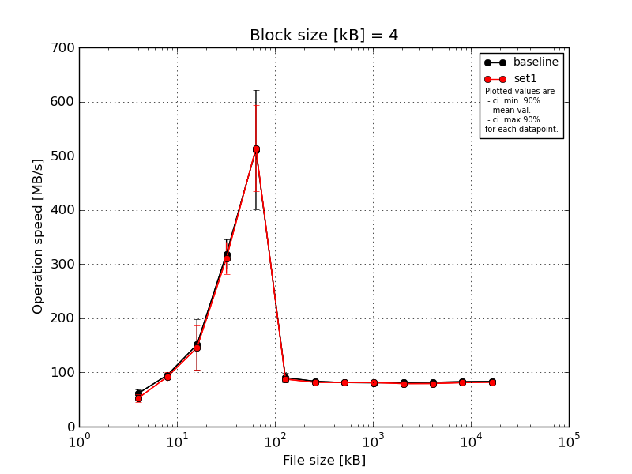
|
Block size [kB] |
File size [kB] |
| 4 |
8 |
16 |
32 |
64 |
128 |
256 |
512 |
1024 |
2048 |
4096 |
8192 |
16384 |
| baseline | 4 | 49.38 | 94.21 | 181.64 | 328.66 | 620.01 | 101.39 | 86.18 | 83.32 | 82.75 | 82.79 | 81.94 | 83.53 | 83.38 |
| 4 | 62.11 | 97.58 | 151.77 | 332.83 | 477.66 | 80.96 | 84.04 | 81.37 | 80.17 | 79.43 | 82.07 | 82.9 | 83.06 |
| 4 | 69.78 | 100.27 | 190.62 | 343.29 | 572.61 | 98.13 | 85.68 | 83.14 | 80.25 | 83.4 | 82.34 | 82.9 | 82.61 |
| 4 | 66.12 | 88.85 | 164.74 | 269.25 | 325.72 | 83.39 | 81.86 | 82.45 | 79.96 | 81.9 | 81.52 | 82.88 | 83.73 |
| 4 | 57.53 | 95.31 | 67.37 | 319.06 | 559.17 | 88.34 | 80.49 | 76.12 | 81.41 | 79.66 | 81.07 | 82.27 | 83.32 |
| mean val. |
60.98 |
95.24 |
151.23 |
318.62 |
511.04 |
90.44 |
83.65 |
81.28 |
80.9 |
81.44 |
81.79 |
82.9 |
83.22 |
| standard dev. |
7.93 |
4.26 |
49.22 |
28.94 |
115.58 |
8.99 |
2.44 |
2.99 |
1.18 |
1.81 |
0.5 |
0.45 |
0.42 |
| ci. min. 90% |
53.42 |
91.18 |
104.3 |
291.03 |
400.84 |
81.88 |
81.32 |
78.43 |
79.78 |
79.71 |
81.31 |
82.47 |
82.82 |
| ci. max 90% |
68.54 |
99.31 |
198.16 |
346.21 |
621.23 |
99.01 |
85.97 |
84.12 |
82.02 |
83.16 |
82.26 |
83.32 |
83.62 |
| geom. mean |
60.55 |
95.17 |
142.29 |
317.49 |
498.83 |
90.09 |
83.62 |
81.23 |
80.9 |
81.42 |
81.78 |
82.89 |
83.22 |
| median |
62.11 |
95.31 |
164.74 |
328.66 |
559.17 |
88.34 |
84.04 |
82.45 |
80.25 |
81.9 |
81.94 |
82.9 |
83.32 |
| first quartile |
57.53 |
94.21 |
151.77 |
319.06 |
477.66 |
83.39 |
81.86 |
81.37 |
80.17 |
79.66 |
81.52 |
82.88 |
83.06 |
| third quartile |
66.12 |
97.58 |
181.64 |
332.83 |
572.61 |
98.13 |
85.68 |
83.14 |
81.41 |
82.79 |
82.07 |
82.9 |
83.38 |
| minimum |
49.38 |
88.85 |
67.37 |
269.25 |
325.72 |
80.96 |
80.49 |
76.12 |
79.96 |
79.43 |
81.07 |
82.27 |
82.61 |
| maximum |
69.78 |
100.27 |
190.62 |
343.29 |
620.01 |
101.39 |
86.18 |
83.32 |
82.75 |
83.4 |
82.34 |
83.53 |
83.73 |
| set1 | 4 | 61.87 | 77.32 | 173.46 | 303.54 | 516.23 | 83.55 | 82.64 | 81.46 | 82.33 | 80.72 | 80.42 | 81.47 | 82.06 |
| 4 | 55.02 | 95.31 | 162.7 | 343.29 | 589.34 | 90.58 | 80.49 | 82.22 | 81.9 | 80.49 | 79.72 | 81.17 | 82.42 |
| 4 | 45.92 | 92.09 | 162.7 | 278.99 | 534.11 | 90.9 | 82.87 | 81.14 | 79.65 | 74.85 | 79.88 | 81.15 | 82.06 |
| 4 | 43.95 | 96.43 | 159.53 | 343.29 | 371.94 | 82.5 | 81.22 | 81.07 | 81.65 | 80.18 | 80.39 | 81.41 | 82.37 |
| 4 | 54.29 | 100.27 | 69.14 | 286.3 | 557.98 | 91.1 | 81.17 | 81.99 | 81.31 | 80.24 | 76.8 | 80.7 | 80.84 |
| mean val. |
52.21 |
92.28 |
145.51 |
311.09 |
513.92 |
87.73 |
81.68 |
81.58 |
81.37 |
79.3 |
79.44 |
81.18 |
81.95 |
| standard dev. |
7.3 |
8.86 |
43.01 |
30.72 |
83.97 |
4.31 |
1.03 |
0.51 |
1.03 |
2.49 |
1.51 |
0.31 |
0.64 |
| ci. min. 90% |
45.24 |
83.84 |
104.5 |
281.79 |
433.87 |
83.62 |
80.7 |
81.09 |
80.39 |
76.92 |
78.0 |
80.89 |
81.33 |
| ci. max 90% |
59.17 |
100.73 |
186.52 |
340.38 |
593.97 |
91.84 |
82.66 |
82.07 |
82.35 |
81.67 |
80.88 |
81.47 |
82.56 |
| geom. mean |
51.8 |
91.92 |
138.33 |
309.88 |
507.68 |
87.64 |
81.67 |
81.58 |
81.36 |
79.26 |
79.43 |
81.18 |
81.95 |
| median |
54.29 |
95.31 |
162.7 |
303.54 |
534.11 |
90.58 |
81.22 |
81.46 |
81.65 |
80.24 |
79.88 |
81.17 |
82.06 |
| first quartile |
45.92 |
92.09 |
159.53 |
286.3 |
516.23 |
83.55 |
81.17 |
81.14 |
81.31 |
80.18 |
79.72 |
81.15 |
82.06 |
| third quartile |
55.02 |
96.43 |
162.7 |
343.29 |
557.98 |
90.9 |
82.64 |
81.99 |
81.9 |
80.49 |
80.39 |
81.41 |
82.37 |
| minimum |
43.95 |
77.32 |
69.14 |
278.99 |
371.94 |
82.5 |
80.49 |
81.07 |
79.65 |
74.85 |
76.8 |
80.7 |
80.84 |
| maximum |
61.87 |
100.27 |
173.46 |
343.29 |
589.34 |
91.1 |
82.87 |
82.22 |
82.33 |
80.72 |
80.42 |
81.47 |
82.42 |
| baseline set1 difference |
-14.39 % |
-3.11 % |
-3.78 % |
-2.36 % |
0.56 % |
-3.0 % |
-2.36 % |
0.37 % |
0.57 % |
-2.63 % |
-2.87 % |
-2.07 % |
-1.53 % |
| ttest p-value |
0.1063 |
0.5199 |
0.8497 |
0.7002 |
0.9651 |
0.5593 |
0.1347 |
0.8312 |
0.5262 |
0.1588 |
0.0109 |
0.0001 |
0.006 |
| ttest equality |
SAME |
SAME |
SAME |
SAME |
SAME |
SAME |
SAME |
SAME |
SAME |
SAME |
DIFF |
DIFF |
DIFF |
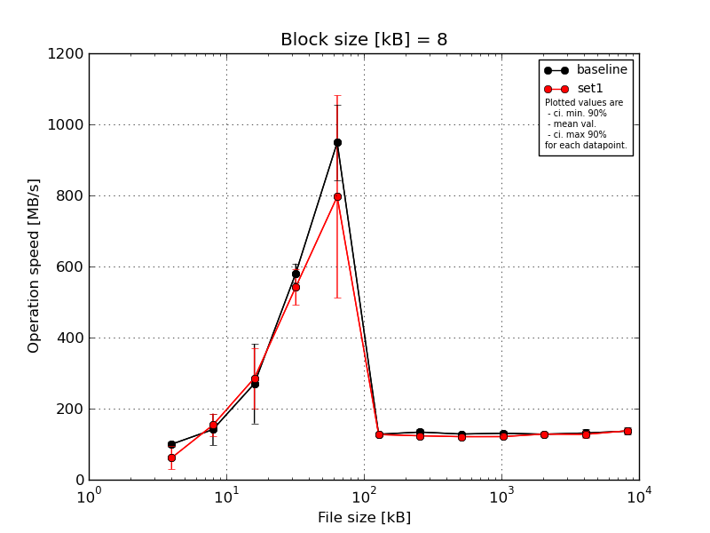
|
Block size [kB] |
File size [kB] |
| 8 |
16 |
32 |
64 |
128 |
256 |
512 |
1024 |
2048 |
4096 |
8192 |
16384 |
| baseline | 8 | 99.96 | 179.15 | 367.35 | 589.34 | 993.33 | 133.54 | 141.09 | 126.23 | 139.89 | 124.47 | 144.74 | 132.44 |
| 8 | 91.84 | 179.65 | 298.02 | 534.11 | 844.53 | 124.01 | 127.49 | 126.15 | 133.24 | 123.72 | 124.01 | 126.72 |
| 8 | 94.21 | 126.08 | 336.25 | 596.04 | 1097.28 | 128.54 | 140.89 | 125.06 | 134.9 | 123.95 | 123.92 | 147.69 |
| 8 | 111.53 | 153.19 | 281.39 | 607.09 | 832.46 | 123.89 | 122.91 | 131.61 | 124.02 | 136.96 | 121.7 | 149.1 |
| 8 | 101.51 | 68.57 | 68.85 | 578.93 | 976.68 | 129.81 | 138.13 | 133.35 | 121.88 | 131.32 | 142.84 | 127.68 |
| mean val. |
99.81 |
141.33 |
270.37 |
581.1 |
948.86 |
127.96 |
134.1 |
128.48 |
130.79 |
128.09 |
131.44 |
136.72 |
| standard dev. |
7.67 |
46.28 |
117.52 |
28.19 |
110.92 |
4.1 |
8.37 |
3.73 |
7.6 |
5.88 |
11.33 |
10.88 |
| ci. min. 90% |
92.5 |
97.21 |
158.33 |
554.22 |
843.1 |
124.05 |
126.12 |
124.92 |
123.55 |
122.48 |
120.64 |
126.35 |
| ci. max 90% |
107.12 |
185.45 |
382.41 |
607.98 |
1054.61 |
131.86 |
142.08 |
132.04 |
138.03 |
133.7 |
142.24 |
147.1 |
| geom. mean |
99.58 |
133.64 |
234.77 |
580.54 |
943.69 |
127.9 |
133.89 |
128.44 |
130.61 |
127.98 |
131.06 |
136.38 |
| median |
99.96 |
153.19 |
298.02 |
589.34 |
976.68 |
128.54 |
138.13 |
126.23 |
133.24 |
124.47 |
124.01 |
132.44 |
| first quartile |
94.21 |
126.08 |
281.39 |
578.93 |
844.53 |
124.01 |
127.49 |
126.15 |
124.02 |
123.95 |
123.92 |
127.68 |
| third quartile |
101.51 |
179.15 |
336.25 |
596.04 |
993.33 |
129.81 |
140.89 |
131.61 |
134.9 |
131.32 |
142.84 |
147.69 |
| minimum |
91.84 |
68.57 |
68.85 |
534.11 |
832.46 |
123.89 |
122.91 |
125.06 |
121.88 |
123.72 |
121.7 |
126.72 |
| maximum |
111.53 |
179.65 |
367.35 |
607.09 |
1097.28 |
133.54 |
141.09 |
133.35 |
139.89 |
136.96 |
144.74 |
149.1 |
| set1 | 8 | 105.77 | 185.76 | 344.2 | 525.54 | 1088.17 | 127.75 | 122.31 | 120.87 | 120.21 | 131.78 | 121.06 | 125.95 |
| 8 | 38.65 | 157.99 | 131.23 | 512.19 | 1077.0 | 131.65 | 120.95 | 120.22 | 122.34 | 131.42 | 137.83 | 143.91 |
| 8 | 90.82 | 97.12 | 350.64 | 520.33 | 805.6 | 130.68 | 121.98 | 121.5 | 119.41 | 136.14 | 120.41 | 130.73 |
| 8 | 36.5 | 166.42 | 302.84 | 638.12 | 395.75 | 123.51 | 125.47 | 121.25 | 119.88 | 121.24 | 120.88 | 145.28 |
| 8 | 35.66 | 162.7 | 300.76 | 516.23 | 616.22 | 121.83 | 126.97 | 121.78 | 124.49 | 121.84 | 137.88 | 142.32 |
| mean val. |
61.48 |
154.0 |
285.93 |
542.48 |
796.55 |
127.09 |
123.54 |
121.13 |
121.27 |
128.48 |
127.61 |
137.64 |
| standard dev. |
34.04 |
33.5 |
89.47 |
53.69 |
298.72 |
4.32 |
2.56 |
0.6 |
2.12 |
6.61 |
9.36 |
8.72 |
| ci. min. 90% |
29.03 |
122.05 |
200.63 |
491.29 |
511.75 |
122.97 |
121.1 |
120.55 |
119.24 |
122.18 |
118.69 |
129.33 |
| ci. max 90% |
93.93 |
185.94 |
371.24 |
593.67 |
1081.35 |
131.2 |
125.97 |
121.7 |
123.29 |
134.78 |
136.53 |
145.95 |
| geom. mean |
54.55 |
150.48 |
270.29 |
540.52 |
745.48 |
127.03 |
123.51 |
121.12 |
121.25 |
128.35 |
127.34 |
137.41 |
| median |
38.65 |
162.7 |
302.84 |
520.33 |
805.6 |
127.75 |
122.31 |
121.25 |
120.21 |
131.42 |
121.06 |
142.32 |
| first quartile |
36.5 |
157.99 |
300.76 |
516.23 |
616.22 |
123.51 |
121.98 |
120.87 |
119.88 |
121.84 |
120.88 |
130.73 |
| third quartile |
90.82 |
166.42 |
344.2 |
525.54 |
1077.0 |
130.68 |
125.47 |
121.5 |
122.34 |
131.78 |
137.83 |
143.91 |
| minimum |
35.66 |
97.12 |
131.23 |
512.19 |
395.75 |
121.83 |
120.95 |
120.22 |
119.41 |
121.24 |
120.41 |
125.95 |
| maximum |
105.77 |
185.76 |
350.64 |
638.12 |
1088.17 |
131.65 |
126.97 |
121.78 |
124.49 |
136.14 |
137.88 |
145.28 |
| baseline set1 difference |
-38.4 % |
8.96 % |
5.76 % |
-6.65 % |
-16.05 % |
-0.68 % |
-7.88 % |
-5.72 % |
-7.28 % |
0.31 % |
-2.92 % |
0.67 % |
| ttest p-value |
0.0395 |
0.6333 |
0.8197 |
0.1922 |
0.3163 |
0.7518 |
0.0271 |
0.0024 |
0.0271 |
0.9224 |
0.5758 |
0.8871 |
| ttest equality |
DIFF |
SAME |
SAME |
SAME |
SAME |
SAME |
DIFF |
DIFF |
DIFF |
SAME |
SAME |
SAME |
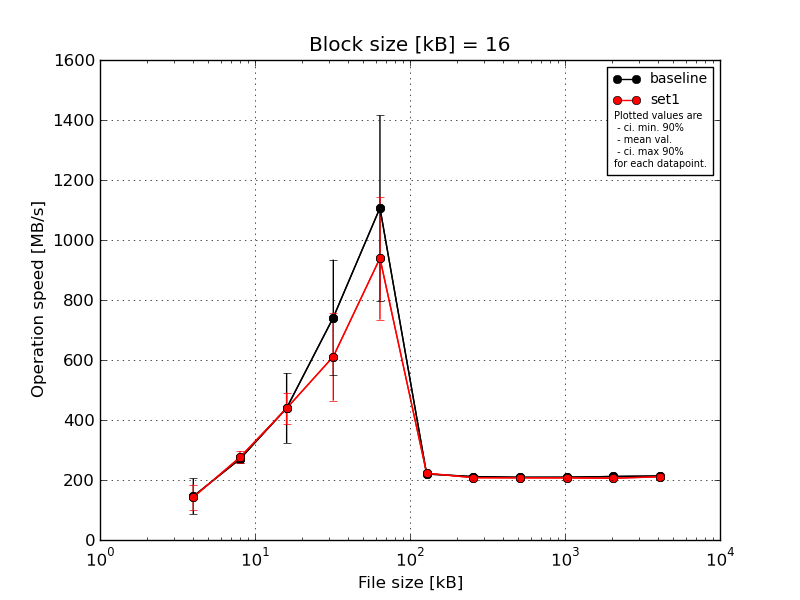
|
Block size [kB] |
File size [kB] |
| 16 |
32 |
64 |
128 |
256 |
512 |
1024 |
2048 |
4096 |
8192 |
16384 |
| baseline | 16 | 171.65 | 276.64 | 517.25 | 976.68 | 1389.2 | 215.43 | 211.69 | 217.13 | 213.12 | 215.27 | 222.1 |
| 16 | 157.99 | 286.93 | 449.03 | 786.27 | 686.78 | 226.55 | 212.32 | 204.81 | 206.43 | 210.63 | 213.15 |
| 16 | 179.65 | 273.75 | 513.2 | 752.42 | 1405.96 | 224.61 | 214.64 | 208.42 | 205.57 | 212.13 | 214.04 |
| 16 | 35.68 | 246.0 | 226.61 | 775.8 | 850.56 | 222.7 | 205.12 | 204.79 | 207.84 | 210.56 | 206.38 |
| 16 | 183.67 | 267.05 | 492.01 | 416.83 | 1201.38 | 210.52 | 213.04 | 210.1 | 213.3 | 210.39 | 211.63 |
| mean val. |
145.73 |
270.07 |
439.62 |
741.6 |
1106.78 |
219.96 |
211.36 |
209.05 |
209.25 |
211.8 |
213.46 |
| standard dev. |
62.3 |
15.24 |
122.11 |
202.5 |
324.14 |
6.75 |
3.66 |
5.07 |
3.7 |
2.07 |
5.67 |
| ci. min. 90% |
86.33 |
255.54 |
323.2 |
548.54 |
797.74 |
213.53 |
207.87 |
204.21 |
205.72 |
209.83 |
208.05 |
| ci. max 90% |
205.12 |
284.61 |
556.04 |
934.66 |
1415.81 |
226.4 |
214.85 |
213.89 |
212.78 |
213.77 |
218.86 |
| geom. mean |
126.13 |
269.72 |
421.41 |
714.99 |
1065.1 |
219.88 |
211.34 |
209.0 |
209.23 |
211.79 |
213.4 |
| median |
171.65 |
273.75 |
492.01 |
775.8 |
1201.38 |
222.7 |
212.32 |
208.42 |
207.84 |
210.63 |
213.15 |
| first quartile |
157.99 |
267.05 |
449.03 |
752.42 |
850.56 |
215.43 |
211.69 |
204.81 |
206.43 |
210.56 |
211.63 |
| third quartile |
179.65 |
276.64 |
513.2 |
786.27 |
1389.2 |
224.61 |
213.04 |
210.1 |
213.12 |
212.13 |
214.04 |
| minimum |
35.68 |
246.0 |
226.61 |
416.83 |
686.78 |
210.52 |
205.12 |
204.79 |
205.57 |
210.39 |
206.38 |
| maximum |
183.67 |
286.93 |
517.25 |
976.68 |
1405.96 |
226.55 |
214.64 |
217.13 |
213.3 |
215.27 |
222.1 |
| set1 | 16 | 179.65 | 294.67 | 416.23 | 744.93 | 735.43 | 221.13 | 207.94 | 210.79 | 209.17 | 203.79 | 209.15 |
| 16 | 162.7 | 303.54 | 481.17 | 766.72 | 1077.89 | 238.78 | 214.69 | 203.27 | 206.12 | 207.72 | 205.83 |
| 16 | 153.19 | 256.1 | 477.66 | 446.66 | 675.71 | 216.36 | 208.07 | 212.18 | 202.32 | 205.78 | 226.04 |
| 16 | 65.68 | 262.25 | 353.39 | 454.4 | 1106.32 | 218.34 | 205.94 | 207.25 | 209.62 | 207.19 | 207.27 |
| 16 | 151.77 | 262.77 | 466.61 | 644.24 | 1100.51 | 218.73 | 201.9 | 202.43 | 208.19 | 205.39 | 205.29 |
| mean val. |
142.6 |
275.87 |
439.01 |
611.39 |
939.17 |
222.67 |
207.71 |
207.18 |
207.08 |
205.97 |
210.72 |
| standard dev. |
44.41 |
21.61 |
54.51 |
153.97 |
214.55 |
9.16 |
4.63 |
4.35 |
2.99 |
1.56 |
8.7 |
| ci. min. 90% |
100.26 |
255.27 |
387.05 |
464.6 |
734.62 |
213.93 |
203.29 |
203.03 |
204.24 |
204.49 |
202.42 |
| ci. max 90% |
184.94 |
296.47 |
490.98 |
758.18 |
1143.73 |
231.41 |
212.12 |
211.34 |
209.93 |
207.46 |
219.01 |
| geom. mean |
134.87 |
275.2 |
436.1 |
595.17 |
918.06 |
222.52 |
207.67 |
207.15 |
207.07 |
205.97 |
210.58 |
| median |
153.19 |
262.77 |
466.61 |
644.24 |
1077.89 |
218.73 |
207.94 |
207.25 |
208.19 |
205.78 |
207.27 |
| first quartile |
151.77 |
262.25 |
416.23 |
454.4 |
735.43 |
218.34 |
205.94 |
203.27 |
206.12 |
205.39 |
205.83 |
| third quartile |
162.7 |
294.67 |
477.66 |
744.93 |
1100.51 |
221.13 |
208.07 |
210.79 |
209.17 |
207.19 |
209.15 |
| minimum |
65.68 |
256.1 |
353.39 |
446.66 |
675.71 |
216.36 |
201.9 |
202.43 |
202.32 |
203.79 |
205.29 |
| maximum |
179.65 |
303.54 |
481.17 |
766.72 |
1106.32 |
238.78 |
214.69 |
212.18 |
209.62 |
207.72 |
226.04 |
| baseline set1 difference |
-2.15 % |
2.14 % |
-0.14 % |
-17.56 % |
-15.14 % |
1.23 % |
-1.73 % |
-0.89 % |
-1.04 % |
-2.75 % |
-1.28 % |
| ttest p-value |
0.9294 |
0.6375 |
0.9922 |
0.2855 |
0.3632 |
0.6094 |
0.2035 |
0.5499 |
0.3379 |
0.001 |
0.5712 |
| ttest equality |
SAME |
SAME |
SAME |
SAME |
SAME |
SAME |
SAME |
SAME |
SAME |
DIFF |
SAME |
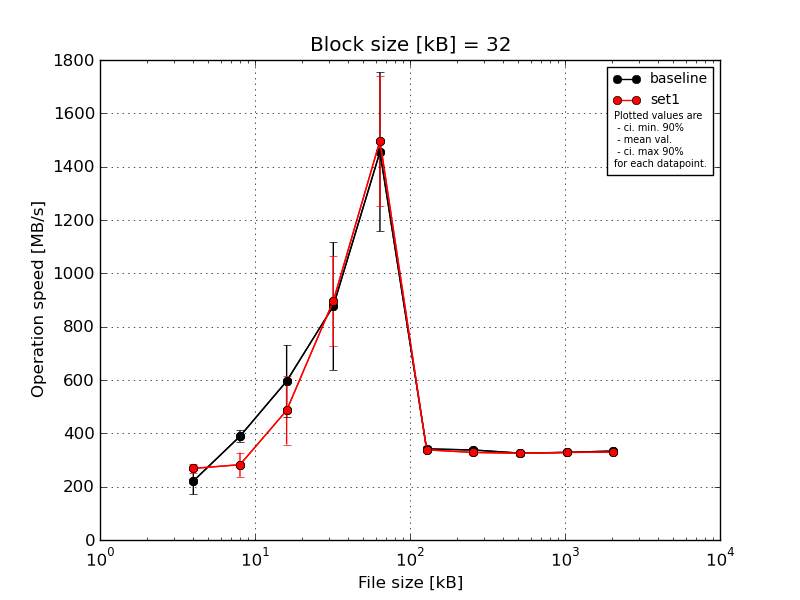
|
Block size [kB] |
File size [kB] |
| 32 |
64 |
128 |
256 |
512 |
1024 |
2048 |
4096 |
8192 |
16384 |
| baseline | 32 | 260.68 | 419.56 | 538.94 | 1225.25 | 1449.5 | 359.97 | 346.38 | 339.04 | 338.95 | 339.31 |
| 32 | 238.83 | 365.71 | 644.24 | 671.82 | 1110.89 | 331.78 | 332.22 | 314.12 | 330.49 | 335.77 |
| 32 | 231.66 | 393.13 | 766.72 | 757.75 | 1917.3 | 339.65 | 335.29 | 332.5 | 331.87 | 335.04 |
| 32 | 128.65 | 365.71 | 641.09 | 1058.31 | 1561.77 | 340.95 | 331.12 | 320.59 | 324.18 | 325.98 |
| 32 | 246.0 | 400.95 | 386.98 | 671.82 | 1237.4 | 335.47 | 342.76 | 322.68 | 317.25 | 331.85 |
| mean val. |
221.16 |
389.01 |
595.6 |
876.99 |
1455.37 |
341.56 |
337.56 |
325.78 |
328.55 |
333.59 |
| standard dev. |
52.82 |
23.34 |
141.82 |
251.28 |
312.61 |
10.9 |
6.71 |
9.92 |
8.21 |
5.01 |
| ci. min. 90% |
170.81 |
366.76 |
460.39 |
637.42 |
1157.33 |
331.17 |
331.16 |
316.33 |
320.72 |
328.81 |
| ci. max 90% |
271.52 |
411.26 |
730.8 |
1116.56 |
1753.42 |
351.96 |
343.95 |
335.24 |
336.38 |
338.37 |
| geom. mean |
214.72 |
388.45 |
580.72 |
849.91 |
1429.36 |
341.43 |
337.5 |
325.66 |
328.47 |
333.56 |
| median |
238.83 |
393.13 |
641.09 |
757.75 |
1449.5 |
339.65 |
335.29 |
322.68 |
330.49 |
335.04 |
| first quartile |
231.66 |
365.71 |
538.94 |
671.82 |
1237.4 |
335.47 |
332.22 |
320.59 |
324.18 |
331.85 |
| third quartile |
246.0 |
400.95 |
644.24 |
1058.31 |
1561.77 |
340.95 |
342.76 |
332.5 |
331.87 |
335.77 |
| minimum |
128.65 |
365.71 |
386.98 |
671.82 |
1110.89 |
331.78 |
331.12 |
314.12 |
317.25 |
325.98 |
| maximum |
260.68 |
419.56 |
766.72 |
1225.25 |
1917.3 |
359.97 |
346.38 |
339.04 |
338.95 |
339.31 |
| set1 | 32 | 294.67 | 314.02 | 601.38 | 708.11 | 1240.33 | 343.52 | 336.31 | 327.36 | 332.32 | 331.71 |
| 32 | 260.68 | 308.11 | 328.95 | 700.54 | 1577.04 | 325.85 | 329.72 | 315.18 | 326.37 | 328.78 |
| 32 | 252.16 | 201.06 | 350.04 | 1059.38 | 1613.43 | 333.65 | 314.9 | 334.87 | 325.89 | 330.83 |
| 32 | 278.99 | 277.75 | 578.81 | 1012.33 | 1231.59 | 344.93 | 326.05 | 320.38 | 328.42 | 331.26 |
| 32 | 256.1 | 311.04 | 570.62 | 999.78 | 1823.92 | 342.82 | 335.12 | 328.0 | 328.28 | 325.38 |
| mean val. |
268.52 |
282.4 |
485.96 |
896.03 |
1497.26 |
338.15 |
328.42 |
325.16 |
328.26 |
329.59 |
| standard dev. |
17.87 |
47.75 |
134.38 |
176.42 |
256.5 |
8.19 |
8.62 |
7.57 |
2.54 |
2.61 |
| ci. min. 90% |
251.48 |
236.88 |
357.84 |
727.83 |
1252.72 |
330.35 |
320.2 |
317.94 |
325.84 |
327.11 |
| ci. max 90% |
285.56 |
327.92 |
614.08 |
1064.23 |
1741.8 |
345.96 |
336.64 |
332.38 |
330.68 |
332.07 |
| geom. mean |
268.05 |
278.67 |
469.74 |
881.38 |
1479.52 |
338.07 |
328.33 |
325.09 |
328.25 |
329.58 |
| median |
260.68 |
308.11 |
570.62 |
999.78 |
1577.04 |
342.82 |
329.72 |
327.36 |
328.28 |
330.83 |
| first quartile |
256.1 |
277.75 |
350.04 |
708.11 |
1240.33 |
333.65 |
326.05 |
320.38 |
326.37 |
328.78 |
| third quartile |
278.99 |
311.04 |
578.81 |
1012.33 |
1613.43 |
343.52 |
335.12 |
328.0 |
328.42 |
331.26 |
| minimum |
252.16 |
201.06 |
328.95 |
700.54 |
1231.59 |
325.85 |
314.9 |
315.18 |
325.89 |
325.38 |
| maximum |
294.67 |
314.02 |
601.38 |
1059.38 |
1823.92 |
344.93 |
336.31 |
334.87 |
332.32 |
331.71 |
| baseline set1 difference |
21.41 % |
-27.41 % |
-18.41 % |
2.17 % |
2.88 % |
-1.0 % |
-2.71 % |
-0.19 % |
-0.09 % |
-1.2 % |
| ttest p-value |
0.0941 |
0.002 |
0.245 |
0.8931 |
0.8226 |
0.5914 |
0.0983 |
0.9137 |
0.9417 |
0.152 |
| ttest equality |
DIFF |
DIFF |
SAME |
SAME |
SAME |
SAME |
DIFF |
SAME |
SAME |
SAME |
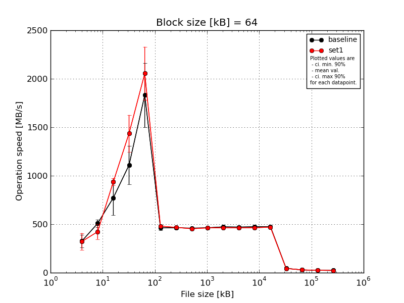
|
Block size [kB] |
File size [kB] |
| 64 |
128 |
256 |
512 |
1024 |
2048 |
4096 |
8192 |
16384 |
32768 |
65536 |
131072 |
262144 |
524288 |
1048576 |
2097152 |
4194304 |
| baseline | 64 | 390.79 | 550.26 | 995.98 | 1453.52 | 1865.95 | 494.79 | 484.61 | 473.46 | 472.32 | 489.75 | 488.01 | 491.82 | 492.1 | 47.05 | 28.8 | 24.63 | 23.66 |
| 64 | 345.01 | 464.87 | 562.9 | 954.2 | 1430.62 | 434.22 | 457.35 | 453.98 | 465.79 | 475.59 | 470.01 | 476.13 | 483.52 | 45.4 | 29.01 | 24.85 | 23.45 |
| 64 | 211.95 | 543.41 | 596.53 | 1033.18 | 2320.11 | 464.46 | 469.2 | 459.29 | 460.82 | 469.5 | 472.77 | 476.45 | 475.53 | 45.68 | 28.99 | 24.75 | 23.42 |
| 64 | 336.17 | 514.61 | 804.24 | 1157.49 | 1968.41 | 481.58 | 452.39 | 457.4 | 458.29 | 460.93 | 451.17 | 450.98 | 451.81 | 43.97 | 29.48 | 24.85 | 23.63 |
| 64 | 349.15 | 466.53 | 906.44 | 952.47 | 1569.84 | 438.12 | 453.58 | 453.41 | 459.9 | 469.04 | 471.03 | 473.84 | 476.35 | 43.33 | 29.26 | 24.96 | 23.62 |
| mean val. |
326.61 |
507.94 |
773.22 |
1110.17 |
1830.99 |
462.64 |
463.43 |
459.51 |
463.43 |
472.96 |
470.6 |
473.84 |
475.86 |
45.09 |
29.11 |
24.81 |
23.55 |
| standard dev. |
67.46 |
40.81 |
189.6 |
209.32 |
349.23 |
26.48 |
13.58 |
8.17 |
5.71 |
10.73 |
13.1 |
14.64 |
15.01 |
1.47 |
0.27 |
0.12 |
0.11 |
| ci. min. 90% |
262.3 |
469.02 |
592.46 |
910.61 |
1498.04 |
437.39 |
450.47 |
451.72 |
457.98 |
462.73 |
458.11 |
459.88 |
461.55 |
43.69 |
28.85 |
24.69 |
23.45 |
| ci. max 90% |
390.93 |
546.85 |
953.98 |
1309.73 |
2163.94 |
487.88 |
476.38 |
467.3 |
468.87 |
483.19 |
483.08 |
487.8 |
490.17 |
46.49 |
29.36 |
24.93 |
23.66 |
| geom. mean |
319.98 |
506.61 |
754.06 |
1095.77 |
1804.6 |
462.03 |
463.27 |
459.45 |
463.4 |
472.86 |
470.45 |
473.66 |
475.67 |
45.07 |
29.11 |
24.81 |
23.55 |
| median |
345.01 |
514.61 |
804.24 |
1033.18 |
1865.95 |
464.46 |
457.35 |
457.4 |
460.82 |
469.5 |
471.03 |
476.13 |
476.35 |
45.4 |
29.01 |
24.85 |
23.62 |
| first quartile |
336.17 |
466.53 |
596.53 |
954.2 |
1569.84 |
438.12 |
453.58 |
453.98 |
459.9 |
469.04 |
470.01 |
473.84 |
475.53 |
43.97 |
28.99 |
24.75 |
23.45 |
| third quartile |
349.15 |
543.41 |
906.44 |
1157.49 |
1968.41 |
481.58 |
469.2 |
459.29 |
465.79 |
475.59 |
472.77 |
476.45 |
483.52 |
45.68 |
29.26 |
24.85 |
23.63 |
| minimum |
211.95 |
464.87 |
562.9 |
952.47 |
1430.62 |
434.22 |
452.39 |
453.41 |
458.29 |
460.93 |
451.17 |
450.98 |
451.81 |
43.33 |
28.8 |
24.63 |
23.42 |
| maximum |
390.79 |
550.26 |
995.98 |
1453.52 |
2320.11 |
494.79 |
484.61 |
473.46 |
472.32 |
489.75 |
488.01 |
491.82 |
492.1 |
47.05 |
29.48 |
24.96 |
23.66 |
| set1 | 64 | 332.33 | 478.89 | 992.21 | 1567.61 | 2141.25 | 473.06 | 475.96 | 447.45 | 461.92 | 466.16 | 466.23 | 470.65 | 478.63 | 46.56 | 29.77 | 25.12 | 23.26 |
| 64 | 411.01 | 324.67 | 906.44 | 1465.71 | 2273.57 | 480.75 | 469.2 | 461.09 | 462.19 | 461.05 | 462.77 | 462.69 | 468.0 | 42.79 | 29.74 | 24.88 | 23.29 |
| 64 | 184.37 | 500.37 | 969.28 | 1087.28 | 2314.99 | 483.33 | 460.99 | 454.72 | 471.88 | 466.58 | 464.42 | 466.45 | 470.05 | 43.29 | 29.7 | 24.76 | 23.28 |
| 64 | 393.13 | 462.82 | 919.15 | 1534.34 | 1613.31 | 484.62 | 462.43 | 456.93 | 451.6 | 460.37 | 461.46 | 462.73 | 467.54 | 41.57 | 28.58 | 25.18 | 23.27 |
| 64 | 289.4 | 347.25 | 905.66 | 1529.87 | 1930.36 | 479.63 | 466.36 | 448.03 | 462.91 | 461.33 | 454.34 | 456.55 | 462.99 | 43.08 | 29.91 | 25.23 | 23.3 |
| mean val. |
322.05 |
422.8 |
938.55 |
1436.96 |
2054.7 |
480.28 |
466.99 |
453.65 |
462.1 |
463.1 |
461.84 |
463.81 |
469.44 |
43.46 |
29.54 |
25.03 |
23.28 |
| standard dev. |
90.96 |
80.78 |
39.73 |
198.93 |
288.72 |
4.5 |
5.97 |
5.86 |
7.18 |
3.01 |
4.56 |
5.22 |
5.75 |
1.86 |
0.54 |
0.2 |
0.02 |
| ci. min. 90% |
235.33 |
345.79 |
900.67 |
1247.31 |
1779.44 |
475.99 |
461.3 |
448.06 |
455.25 |
460.22 |
457.49 |
458.84 |
463.96 |
41.69 |
29.03 |
24.84 |
23.26 |
| ci. max 90% |
408.77 |
499.81 |
976.43 |
1626.62 |
2329.96 |
484.57 |
472.68 |
459.23 |
468.95 |
465.97 |
466.19 |
468.79 |
474.92 |
45.23 |
30.06 |
25.23 |
23.29 |
| geom. mean |
310.05 |
416.3 |
937.88 |
1424.43 |
2037.31 |
480.26 |
466.96 |
453.62 |
462.06 |
463.09 |
461.83 |
463.79 |
469.41 |
43.43 |
29.54 |
25.03 |
23.28 |
| median |
332.33 |
462.82 |
919.15 |
1529.87 |
2141.25 |
480.75 |
466.36 |
454.72 |
462.19 |
461.33 |
462.77 |
462.73 |
468.0 |
43.08 |
29.74 |
25.12 |
23.28 |
| first quartile |
289.4 |
347.25 |
906.44 |
1465.71 |
1930.36 |
479.63 |
462.43 |
448.03 |
461.92 |
461.05 |
461.46 |
462.69 |
467.54 |
42.79 |
29.7 |
24.88 |
23.27 |
| third quartile |
393.13 |
478.89 |
969.28 |
1534.34 |
2273.57 |
483.33 |
469.2 |
456.93 |
462.91 |
466.16 |
464.42 |
466.45 |
470.05 |
43.29 |
29.77 |
25.18 |
23.29 |
| minimum |
184.37 |
324.67 |
905.66 |
1087.28 |
1613.31 |
473.06 |
460.99 |
447.45 |
451.6 |
460.37 |
454.34 |
456.55 |
462.99 |
41.57 |
28.58 |
24.76 |
23.26 |
| maximum |
411.01 |
500.37 |
992.21 |
1567.61 |
2314.99 |
484.62 |
475.96 |
461.09 |
471.88 |
466.58 |
466.23 |
470.65 |
478.63 |
46.56 |
29.91 |
25.23 |
23.3 |
| baseline set1 difference |
-1.4 % |
-16.76 % |
21.38 % |
29.44 % |
12.22 % |
3.81 % |
0.77 % |
-1.28 % |
-0.29 % |
-2.09 % |
-1.86 % |
-2.12 % |
-1.35 % |
-3.61 % |
1.49 % |
0.91 % |
-1.17 % |
| ttest p-value |
0.9304 |
0.0686 |
0.0928 |
0.0352 |
0.3017 |
0.1801 |
0.6058 |
0.2284 |
0.755 |
0.0832 |
0.1957 |
0.1872 |
0.398 |
0.1626 |
0.1449 |
0.0687 |
0.0005 |
| ttest equality |
SAME |
DIFF |
DIFF |
DIFF |
SAME |
SAME |
SAME |
SAME |
SAME |
DIFF |
SAME |
SAME |
SAME |
SAME |
SAME |
DIFF |
DIFF |
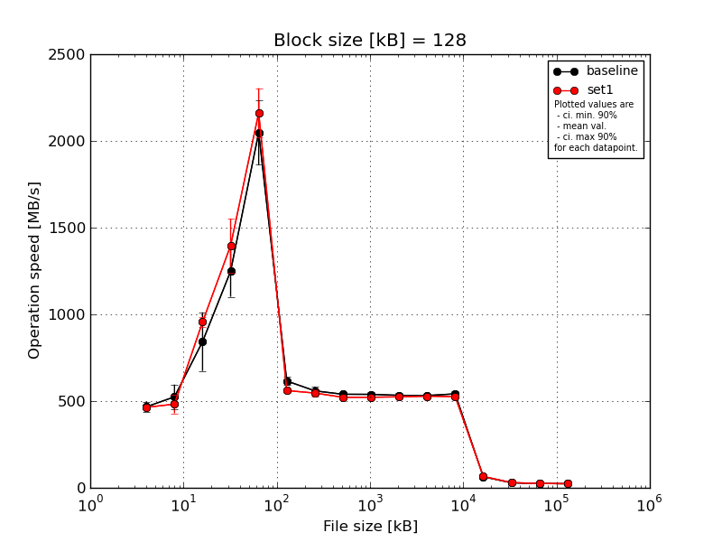
|
Block size [kB] |
File size [kB] |
| 128 |
256 |
512 |
1024 |
2048 |
4096 |
8192 |
16384 |
32768 |
65536 |
131072 |
262144 |
524288 |
1048576 |
2097152 |
4194304 |
| baseline | 128 | 508.13 | 609.71 | 1050.78 | 1366.31 | 2107.79 | 660.06 | 576.45 | 562.33 | 556.6 | 548.7 | 541.3 | 558.07 | 55.66 | 28.95 | 24.87 | 23.6 |
| 128 | 432.29 | 476.23 | 651.73 | 1353.52 | 1715.18 | 601.86 | 550.85 | 542.65 | 533.16 | 531.97 | 540.44 | 551.14 | 63.46 | 29.1 | 24.95 | 23.57 |
| 128 | 484.64 | 573.37 | 1010.28 | 1365.86 | 2224.62 | 616.61 | 550.06 | 526.63 | 537.69 | 541.31 | 529.93 | 540.45 | 71.35 | 28.78 | 24.95 | 23.59 |
| 128 | 441.39 | 537.78 | 769.37 | 1085.82 | 2063.72 | 601.12 | 592.46 | 537.92 | 524.29 | 517.9 | 516.47 | 521.32 | 66.4 | 29.0 | 24.92 | 23.58 |
| 128 | 468.2 | 425.25 | 731.02 | 1073.04 | 2129.73 | 599.79 | 525.55 | 527.17 | 542.27 | 525.87 | 531.7 | 537.31 | 62.5 | 28.92 | 24.94 | 23.61 |
| mean val. |
466.93 |
524.47 |
842.64 |
1248.91 |
2048.21 |
615.89 |
559.07 |
539.34 |
538.8 |
533.15 |
531.97 |
541.66 |
63.87 |
28.95 |
24.93 |
23.59 |
| standard dev. |
31.08 |
74.17 |
177.27 |
154.87 |
195.23 |
25.62 |
25.93 |
14.59 |
11.96 |
12.2 |
10.04 |
14.08 |
5.74 |
0.12 |
0.03 |
0.02 |
| ci. min. 90% |
437.3 |
453.75 |
673.63 |
1101.26 |
1862.07 |
591.46 |
534.35 |
525.43 |
527.4 |
521.52 |
522.39 |
528.23 |
58.4 |
28.84 |
24.89 |
23.57 |
| ci. max 90% |
496.56 |
595.18 |
1011.64 |
1396.56 |
2234.34 |
640.31 |
583.79 |
553.25 |
550.21 |
544.78 |
541.54 |
555.08 |
69.35 |
29.06 |
24.96 |
23.6 |
| geom. mean |
466.11 |
520.14 |
827.98 |
1240.96 |
2040.2 |
615.47 |
558.59 |
539.18 |
538.7 |
533.04 |
531.89 |
541.51 |
63.66 |
28.95 |
24.93 |
23.59 |
| median |
468.2 |
537.78 |
769.37 |
1353.52 |
2107.79 |
601.86 |
550.85 |
537.92 |
537.69 |
531.97 |
531.7 |
540.45 |
63.46 |
28.95 |
24.94 |
23.59 |
| first quartile |
441.39 |
476.23 |
731.02 |
1085.82 |
2063.72 |
601.12 |
550.06 |
527.17 |
533.16 |
525.87 |
529.93 |
537.31 |
62.5 |
28.92 |
24.92 |
23.58 |
| third quartile |
484.64 |
573.37 |
1010.28 |
1365.86 |
2129.73 |
616.61 |
576.45 |
542.65 |
542.27 |
541.31 |
540.44 |
551.14 |
66.4 |
29.0 |
24.95 |
23.6 |
| minimum |
432.29 |
425.25 |
651.73 |
1073.04 |
1715.18 |
599.79 |
525.55 |
526.63 |
524.29 |
517.9 |
516.47 |
521.32 |
55.66 |
28.78 |
24.87 |
23.57 |
| maximum |
508.13 |
609.71 |
1050.78 |
1366.31 |
2224.62 |
660.06 |
592.46 |
562.33 |
556.6 |
548.7 |
541.3 |
558.07 |
71.35 |
29.1 |
24.95 |
23.61 |
| set1 | 128 | 456.38 | 513.3 | 968.75 | 1547.82 | 2114.17 | 550.74 | 578.71 | 503.34 | 523.16 | 532.83 | 529.79 | 537.36 | 66.48 | 30.34 | 25.48 | 23.45 |
| 128 | 468.2 | 497.94 | 998.26 | 1577.51 | 2129.73 | 568.43 | 534.44 | 518.14 | 527.15 | 522.67 | 525.21 | 528.51 | 65.52 | 30.45 | 25.01 | 23.45 |
| 128 | 477.14 | 545.9 | 952.47 | 1261.14 | 2064.22 | 538.87 | 555.21 | 539.07 | 528.81 | 522.12 | 533.3 | 519.63 | 66.38 | 30.53 | 25.11 | 23.47 |
| 128 | 471.99 | 403.17 | 934.64 | 1220.76 | 2424.59 | 570.87 | 533.73 | 519.18 | 519.36 | 525.46 | 529.76 | 524.63 | 67.49 | 29.27 | 25.44 | 23.45 |
| 128 | 446.28 | 451.23 | 925.97 | 1375.72 | 2077.0 | 574.88 | 529.35 | 529.29 | 512.01 | 520.14 | 522.33 | 519.87 | 62.62 | 30.49 | 25.47 | 23.47 |
| mean val. |
464.0 |
482.31 |
956.02 |
1396.59 |
2161.94 |
560.76 |
546.29 |
521.8 |
522.1 |
524.64 |
528.08 |
526.0 |
65.7 |
30.21 |
25.3 |
23.46 |
| standard dev. |
12.51 |
55.85 |
28.8 |
162.25 |
149.22 |
15.33 |
20.71 |
13.37 |
6.73 |
4.96 |
4.31 |
7.34 |
1.85 |
0.53 |
0.22 |
0.01 |
| ci. min. 90% |
452.06 |
429.06 |
928.56 |
1241.9 |
2019.68 |
546.15 |
526.54 |
509.05 |
515.68 |
519.92 |
523.97 |
519.0 |
63.93 |
29.7 |
25.09 |
23.45 |
| ci. max 90% |
475.93 |
535.56 |
983.48 |
1551.28 |
2304.21 |
575.37 |
566.03 |
534.55 |
528.51 |
529.37 |
532.19 |
533.0 |
67.47 |
30.72 |
25.51 |
23.47 |
| geom. mean |
463.86 |
479.64 |
955.67 |
1389.07 |
2158.04 |
560.59 |
545.98 |
521.66 |
522.06 |
524.62 |
528.07 |
525.96 |
65.68 |
30.21 |
25.3 |
23.46 |
| median |
468.2 |
497.94 |
952.47 |
1375.72 |
2114.17 |
568.43 |
534.44 |
519.18 |
523.16 |
522.67 |
529.76 |
524.63 |
66.38 |
30.45 |
25.44 |
23.45 |
| first quartile |
456.38 |
451.23 |
934.64 |
1261.14 |
2077.0 |
550.74 |
533.73 |
518.14 |
519.36 |
522.12 |
525.21 |
519.87 |
65.52 |
30.34 |
25.11 |
23.45 |
| third quartile |
471.99 |
513.3 |
968.75 |
1547.82 |
2129.73 |
570.87 |
555.21 |
529.29 |
527.15 |
525.46 |
529.79 |
528.51 |
66.48 |
30.49 |
25.47 |
23.47 |
| minimum |
446.28 |
403.17 |
925.97 |
1220.76 |
2064.22 |
538.87 |
529.35 |
503.34 |
512.01 |
520.14 |
522.33 |
519.63 |
62.62 |
29.27 |
25.01 |
23.45 |
| maximum |
477.14 |
545.9 |
998.26 |
1577.51 |
2424.59 |
574.88 |
578.71 |
539.07 |
528.81 |
532.83 |
533.3 |
537.36 |
67.49 |
30.53 |
25.48 |
23.47 |
| baseline set1 difference |
-0.63 % |
-8.04 % |
13.46 % |
11.82 % |
5.55 % |
-8.95 % |
-2.29 % |
-3.25 % |
-3.1 % |
-1.6 % |
-0.73 % |
-2.89 % |
2.86 % |
4.37 % |
1.5 % |
-0.55 % |
| ttest p-value |
0.8497 |
0.3397 |
0.1957 |
0.1792 |
0.331 |
0.0033 |
0.4139 |
0.0829 |
0.0262 |
0.1865 |
0.4491 |
0.0586 |
0.5179 |
0.0008 |
0.0059 |
0.0 |
| ttest equality |
SAME |
SAME |
SAME |
SAME |
SAME |
DIFF |
SAME |
DIFF |
DIFF |
SAME |
SAME |
DIFF |
SAME |
DIFF |
DIFF |
DIFF |
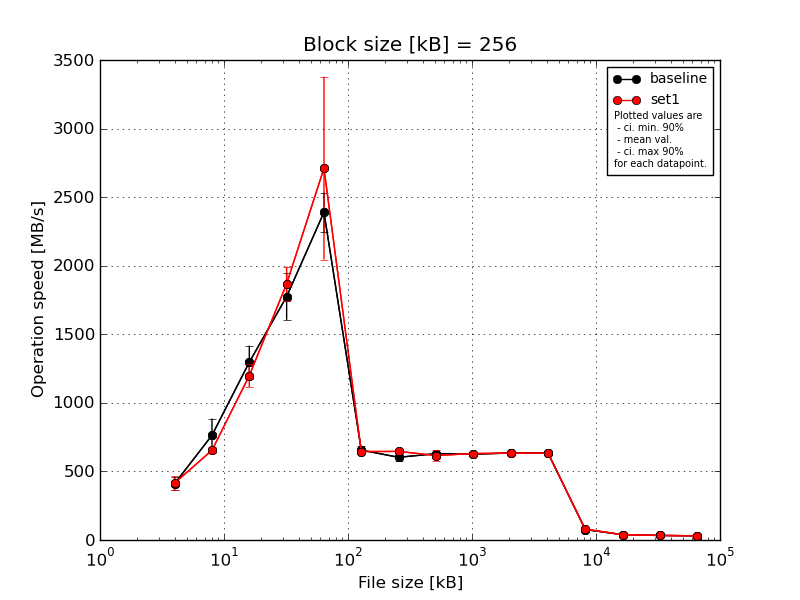
|
Block size [kB] |
File size [kB] |
| 256 |
512 |
1024 |
2048 |
4096 |
8192 |
16384 |
32768 |
65536 |
131072 |
262144 |
524288 |
1048576 |
2097152 |
4194304 |
| baseline | 256 | 391.29 | 919.08 | 1227.19 | 1874.21 | 2599.18 | 685.64 | 641.54 | 630.32 | 634.1 | 639.7 | 645.7 | 63.78 | 39.11 | 33.15 | 30.61 |
| 256 | 397.37 | 664.96 | 1180.56 | 1811.48 | 2250.83 | 625.68 | 614.06 | 645.86 | 631.16 | 634.48 | 634.96 | 78.71 | 38.55 | 33.12 | 30.56 |
| 256 | 494.19 | 887.94 | 1440.94 | 1839.68 | 2466.22 | 643.45 | 584.6 | 634.78 | 633.75 | 647.2 | 637.29 | 84.16 | 38.88 | 32.86 | 30.6 |
| 256 | 374.78 | 671.13 | 1207.76 | 1460.97 | 2391.0 | 629.67 | 592.22 | 612.66 | 608.4 | 623.65 | 628.11 | 79.29 | 38.96 | 33.12 | 30.59 |
| 256 | 399.33 | 673.93 | 1426.24 | 1888.56 | 2240.9 | 694.81 | 582.58 | 623.23 | 621.25 | 627.76 | 634.41 | 74.98 | 38.74 | 33.14 | 30.55 |
| mean val. |
411.39 |
763.41 |
1296.54 |
1774.98 |
2389.63 |
655.85 |
603.0 |
629.37 |
625.73 |
634.56 |
636.1 |
76.18 |
38.85 |
33.08 |
30.58 |
| standard dev. |
47.28 |
128.41 |
126.31 |
178.09 |
150.97 |
32.23 |
24.9 |
12.44 |
11.0 |
9.37 |
6.36 |
7.67 |
0.22 |
0.12 |
0.03 |
| ci. min. 90% |
366.32 |
640.99 |
1176.11 |
1605.19 |
2245.7 |
625.12 |
579.27 |
617.51 |
615.24 |
625.62 |
630.04 |
68.87 |
38.64 |
32.96 |
30.56 |
| ci. max 90% |
456.47 |
885.83 |
1416.96 |
1944.77 |
2533.56 |
686.58 |
626.74 |
641.23 |
636.22 |
643.49 |
642.16 |
83.49 |
39.05 |
33.19 |
30.61 |
| geom. mean |
409.39 |
755.08 |
1291.71 |
1767.15 |
2385.85 |
655.22 |
602.6 |
629.27 |
625.65 |
634.5 |
636.07 |
75.85 |
38.85 |
33.08 |
30.58 |
| median |
397.37 |
673.93 |
1227.19 |
1839.68 |
2391.0 |
643.45 |
592.22 |
630.32 |
631.16 |
634.48 |
634.96 |
78.71 |
38.88 |
33.12 |
30.59 |
| first quartile |
391.29 |
671.13 |
1207.76 |
1811.48 |
2250.83 |
629.67 |
584.6 |
623.23 |
621.25 |
627.76 |
634.41 |
74.98 |
38.74 |
33.12 |
30.56 |
| third quartile |
399.33 |
887.94 |
1426.24 |
1874.21 |
2466.22 |
685.64 |
614.06 |
634.78 |
633.75 |
639.7 |
637.29 |
79.29 |
38.96 |
33.14 |
30.6 |
| minimum |
374.78 |
664.96 |
1180.56 |
1460.97 |
2240.9 |
625.68 |
582.58 |
612.66 |
608.4 |
623.65 |
628.11 |
63.78 |
38.55 |
32.86 |
30.55 |
| maximum |
494.19 |
919.08 |
1440.94 |
1888.56 |
2599.18 |
694.81 |
641.54 |
645.86 |
634.1 |
647.2 |
645.7 |
84.16 |
39.11 |
33.15 |
30.61 |
| set1 | 256 | 416.63 | 673.07 | 1144.17 | 2081.12 | 2552.91 | 662.09 | 631.21 | 629.65 | 631.48 | 637.14 | 634.87 | 72.26 | 38.5 | 33.03 | 30.75 |
| 256 | 386.39 | 624.37 | 1159.03 | 1782.61 | 2245.7 | 637.91 | 640.57 | 543.94 | 623.87 | 630.16 | 633.53 | 82.84 | 38.58 | 33.04 | 30.66 |
| 256 | 370.94 | 646.91 | 1190.61 | 1910.49 | 3941.27 | 620.39 | 670.53 | 632.92 | 628.11 | 635.44 | 635.99 | 79.0 | 38.47 | 33.1 | 30.82 |
| 256 | 399.94 | 680.27 | 1149.5 | 1773.19 | 2324.42 | 661.32 | 642.34 | 646.22 | 633.94 | 629.98 | 632.96 | 85.82 | 38.64 | 33.04 | 30.73 |
| 256 | 503.2 | 646.71 | 1351.34 | 1793.66 | 2490.75 | 642.68 | 645.47 | 627.44 | 636.06 | 631.3 | 631.67 | 78.31 | 38.62 | 33.09 | 30.82 |
| mean val. |
415.42 |
654.27 |
1198.93 |
1868.21 |
2711.01 |
644.88 |
646.02 |
616.03 |
630.69 |
632.8 |
633.81 |
79.65 |
38.56 |
33.06 |
30.76 |
| standard dev. |
51.88 |
22.55 |
87.08 |
131.37 |
698.75 |
17.46 |
14.69 |
40.95 |
4.82 |
3.28 |
1.68 |
5.12 |
0.07 |
0.03 |
0.07 |
| ci. min. 90% |
365.95 |
632.76 |
1115.91 |
1742.97 |
2044.83 |
628.23 |
632.01 |
576.99 |
626.09 |
629.68 |
632.21 |
74.76 |
38.49 |
33.03 |
30.69 |
| ci. max 90% |
464.89 |
675.77 |
1281.95 |
1993.46 |
3377.19 |
661.52 |
660.03 |
655.08 |
635.29 |
635.93 |
635.4 |
84.53 |
38.63 |
33.09 |
30.82 |
| geom. mean |
413.01 |
653.95 |
1196.54 |
1864.66 |
2650.54 |
644.69 |
645.89 |
614.88 |
630.68 |
632.8 |
633.8 |
79.51 |
38.56 |
33.06 |
30.76 |
| median |
399.94 |
646.91 |
1159.03 |
1793.66 |
2490.75 |
642.68 |
642.34 |
629.65 |
631.48 |
631.3 |
633.53 |
79.0 |
38.58 |
33.04 |
30.75 |
| first quartile |
386.39 |
646.71 |
1149.5 |
1782.61 |
2324.42 |
637.91 |
640.57 |
627.44 |
628.11 |
630.16 |
632.96 |
78.31 |
38.5 |
33.04 |
30.73 |
| third quartile |
416.63 |
673.07 |
1190.61 |
1910.49 |
2552.91 |
661.32 |
645.47 |
632.92 |
633.94 |
635.44 |
634.87 |
82.84 |
38.62 |
33.09 |
30.82 |
| minimum |
370.94 |
624.37 |
1144.17 |
1773.19 |
2245.7 |
620.39 |
631.21 |
543.94 |
623.87 |
629.98 |
631.67 |
72.26 |
38.47 |
33.03 |
30.66 |
| maximum |
503.2 |
680.27 |
1351.34 |
2081.12 |
3941.27 |
662.09 |
670.53 |
646.22 |
636.06 |
637.14 |
635.99 |
85.82 |
38.64 |
33.1 |
30.82 |
| baseline set1 difference |
0.98 % |
-14.3 % |
-7.53 % |
5.25 % |
13.45 % |
-1.67 % |
7.13 % |
-2.12 % |
0.79 % |
-0.28 % |
-0.36 % |
4.55 % |
-0.73 % |
-0.05 % |
0.57 % |
| ttest p-value |
0.9011 |
0.0981 |
0.1926 |
0.3737 |
0.3442 |
0.5221 |
0.0104 |
0.5056 |
0.383 |
0.7032 |
0.4583 |
0.4252 |
0.0233 |
0.7664 |
0.0007 |
| ttest equality |
SAME |
DIFF |
SAME |
SAME |
SAME |
SAME |
DIFF |
SAME |
SAME |
SAME |
SAME |
SAME |
DIFF |
SAME |
DIFF |
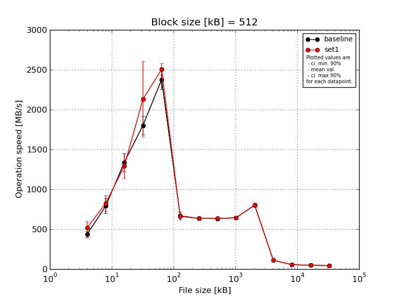
|
Block size [kB] |
File size [kB] |
| 512 |
1024 |
2048 |
4096 |
8192 |
16384 |
32768 |
65536 |
131072 |
262144 |
524288 |
1048576 |
2097152 |
4194304 |
| baseline | 512 | 472.99 | 939.83 | 1429.6 | 1973.14 | 2492.94 | 751.91 | 647.47 | 654.35 | 663.37 | 803.05 | 92.58 | 56.25 | 48.29 | 45.35 |
| 512 | 460.43 | 787.4 | 1179.2 | 1671.4 | 2370.37 | 645.81 | 638.87 | 638.51 | 637.39 | 802.46 | 116.98 | 55.9 | 48.17 | 45.46 |
| 512 | 470.02 | 825.68 | 1472.77 | 1877.95 | 2493.86 | 621.02 | 622.88 | 622.04 | 661.37 | 804.72 | 124.45 | 55.86 | 48.3 | 45.45 |
| 512 | 381.11 | 689.19 | 1346.74 | 1766.62 | 2188.84 | 638.9 | 640.09 | 629.54 | 631.07 | 792.32 | 119.04 | 56.29 | 48.41 | 45.4 |
| 512 | 396.45 | 717.98 | 1271.62 | 1726.44 | 2329.55 | 677.1 | 634.88 | 625.61 | 632.7 | 799.27 | 105.34 | 55.84 | 48.34 | 45.43 |
| mean val. |
436.2 |
792.02 |
1339.99 |
1803.11 |
2375.11 |
666.95 |
636.84 |
634.01 |
645.18 |
800.37 |
111.68 |
56.03 |
48.3 |
45.42 |
| standard dev. |
43.87 |
98.82 |
118.57 |
121.52 |
127.26 |
51.63 |
9.03 |
12.92 |
15.88 |
4.91 |
12.75 |
0.22 |
0.09 |
0.05 |
| ci. min. 90% |
394.37 |
697.81 |
1226.94 |
1687.25 |
2253.78 |
617.72 |
628.23 |
621.69 |
630.04 |
795.68 |
99.53 |
55.81 |
48.22 |
45.37 |
| ci. max 90% |
478.03 |
886.23 |
1453.03 |
1918.96 |
2496.44 |
716.18 |
645.45 |
646.33 |
660.32 |
805.05 |
123.83 |
56.24 |
48.38 |
45.46 |
| geom. mean |
434.38 |
787.23 |
1335.72 |
1799.88 |
2372.34 |
665.42 |
636.79 |
633.91 |
645.03 |
800.35 |
111.07 |
56.03 |
48.3 |
45.42 |
| median |
460.43 |
787.4 |
1346.74 |
1766.62 |
2370.37 |
645.81 |
638.87 |
629.54 |
637.39 |
802.46 |
116.98 |
55.9 |
48.3 |
45.43 |
| first quartile |
396.45 |
717.98 |
1271.62 |
1726.44 |
2329.55 |
638.9 |
634.88 |
625.61 |
632.7 |
799.27 |
105.34 |
55.86 |
48.29 |
45.4 |
| third quartile |
470.02 |
825.68 |
1429.6 |
1877.95 |
2492.94 |
677.1 |
640.09 |
638.51 |
661.37 |
803.05 |
119.04 |
56.25 |
48.34 |
45.45 |
| minimum |
381.11 |
689.19 |
1179.2 |
1671.4 |
2188.84 |
621.02 |
622.88 |
622.04 |
631.07 |
792.32 |
92.58 |
55.84 |
48.17 |
45.35 |
| maximum |
472.99 |
939.83 |
1472.77 |
1973.14 |
2493.86 |
751.91 |
647.47 |
654.35 |
663.37 |
804.72 |
124.45 |
56.29 |
48.41 |
45.46 |
| set1 | 512 | 669.42 | 965.14 | 1537.27 | 1914.81 | 2530.92 | 651.23 | 636.92 | 643.91 | 650.17 | 802.56 | 99.36 | 55.67 | 48.49 | 45.03 |
| 512 | 464.3 | 714.31 | 1094.0 | 1824.64 | 2616.17 | 680.07 | 626.58 | 642.88 | 635.16 | 808.28 | 113.94 | 55.47 | 48.39 | 45.24 |
| 512 | 469.08 | 791.11 | 1203.39 | 3007.31 | 2481.32 | 638.49 | 638.33 | 635.93 | 644.6 | 806.63 | 112.18 | 55.39 | 47.51 | 45.17 |
| 512 | 489.21 | 901.65 | 1331.57 | 2048.05 | 2492.94 | 662.09 | 640.35 | 629.46 | 640.82 | 806.08 | 115.45 | 55.53 | 48.25 | 44.96 |
| 512 | 500.54 | 750.75 | 1304.64 | 1866.46 | 2403.13 | 673.94 | 634.53 | 630.22 | 640.13 | 800.45 | 107.13 | 55.74 | 47.31 | 45.02 |
| mean val. |
518.51 |
824.59 |
1294.18 |
2132.25 |
2504.89 |
661.16 |
635.34 |
636.48 |
642.17 |
804.8 |
109.61 |
55.56 |
47.99 |
45.08 |
| standard dev. |
85.64 |
105.39 |
165.01 |
496.33 |
77.64 |
16.84 |
5.34 |
6.8 |
5.59 |
3.21 |
6.53 |
0.14 |
0.54 |
0.12 |
| ci. min. 90% |
436.86 |
724.12 |
1136.85 |
1659.06 |
2430.87 |
645.11 |
630.25 |
630.0 |
636.84 |
801.74 |
103.39 |
55.42 |
47.48 |
44.97 |
| ci. max 90% |
600.16 |
925.07 |
1451.5 |
2605.45 |
2578.92 |
677.22 |
640.43 |
642.96 |
647.51 |
807.86 |
115.84 |
55.69 |
48.51 |
45.19 |
| geom. mean |
513.49 |
819.31 |
1285.9 |
2092.99 |
2503.93 |
660.99 |
635.32 |
636.45 |
642.15 |
804.79 |
109.45 |
55.56 |
47.99 |
45.08 |
| median |
489.21 |
791.11 |
1304.64 |
1914.81 |
2492.94 |
662.09 |
636.92 |
635.93 |
640.82 |
806.08 |
112.18 |
55.53 |
48.25 |
45.03 |
| first quartile |
469.08 |
750.75 |
1203.39 |
1866.46 |
2481.32 |
651.23 |
634.53 |
630.22 |
640.13 |
802.56 |
107.13 |
55.47 |
47.51 |
45.02 |
| third quartile |
500.54 |
901.65 |
1331.57 |
2048.05 |
2530.92 |
673.94 |
638.33 |
642.88 |
644.6 |
806.63 |
113.94 |
55.67 |
48.39 |
45.17 |
| minimum |
464.3 |
714.31 |
1094.0 |
1824.64 |
2403.13 |
638.49 |
626.58 |
629.46 |
635.16 |
800.45 |
99.36 |
55.39 |
47.31 |
44.96 |
| maximum |
669.42 |
965.14 |
1537.27 |
3007.31 |
2616.17 |
680.07 |
640.35 |
643.91 |
650.17 |
808.28 |
115.45 |
55.74 |
48.49 |
45.24 |
| baseline set1 difference |
18.87 % |
4.11 % |
-3.42 % |
18.25 % |
5.46 % |
-0.87 % |
-0.24 % |
0.39 % |
-0.47 % |
0.55 % |
-1.85 % |
-0.84 % |
-0.64 % |
-0.74 % |
| ttest p-value |
0.0921 |
0.6277 |
0.6278 |
0.1877 |
0.0874 |
0.8177 |
0.7574 |
0.7149 |
0.7001 |
0.1294 |
0.7553 |
0.0042 |
0.2386 |
0.0003 |
| ttest equality |
DIFF |
SAME |
SAME |
SAME |
DIFF |
SAME |
SAME |
SAME |
SAME |
SAME |
SAME |
DIFF |
SAME |
DIFF |
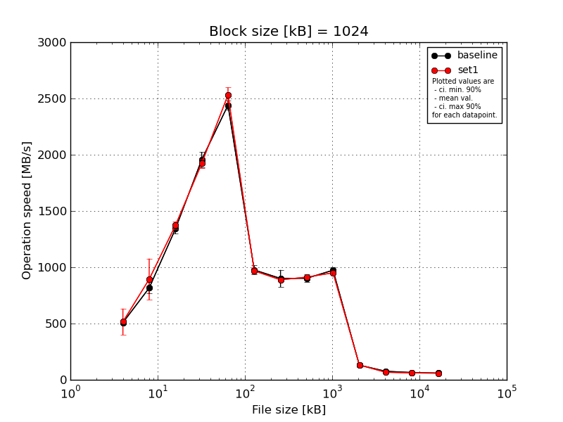
|
Block size [kB] |
File size [kB] |
| 1024 |
2048 |
4096 |
8192 |
16384 |
32768 |
65536 |
131072 |
262144 |
524288 |
1048576 |
2097152 |
4194304 |
| baseline | 1024 | 515.73 | 782.17 | 1319.19 | 1986.55 | 2474.9 | 949.19 | 951.18 | 956.29 | 985.75 | 99.9 | 75.4 | 64.66 | 59.5 |
| 1024 | 492.65 | 799.31 | 1405.97 | 1940.37 | 2423.51 | 1014.97 | 918.68 | 911.34 | 975.17 | 131.12 | 75.83 | 64.61 | 59.6 |
| 1024 | 528.0 | 776.74 | 1296.66 | 2016.64 | 2446.12 | 1012.18 | 760.11 | 896.63 | 1004.09 | 149.89 | 76.47 | 64.71 | 59.73 |
| 1024 | 520.59 | 906.7 | 1311.87 | 1839.53 | 2377.07 | 916.83 | 929.68 | 874.44 | 937.26 | 146.49 | 75.42 | 64.27 | 59.62 |
| 1024 | 485.18 | 816.98 | 1372.17 | 1998.02 | 2481.4 | 987.47 | 943.31 | 873.52 | 967.79 | 126.67 | 75.4 | 64.78 | 59.72 |
| mean val. |
508.43 |
816.38 |
1341.17 |
1956.22 |
2440.6 |
976.13 |
900.59 |
902.44 |
974.02 |
130.81 |
75.71 |
64.61 |
59.63 |
| standard dev. |
18.53 |
52.89 |
46.05 |
71.04 |
42.43 |
42.37 |
79.52 |
34.03 |
24.66 |
19.89 |
0.46 |
0.2 |
0.09 |
| ci. min. 90% |
490.76 |
765.95 |
1297.27 |
1888.49 |
2400.15 |
935.73 |
824.78 |
870.0 |
950.5 |
111.85 |
75.26 |
64.42 |
59.54 |
| ci. max 90% |
526.1 |
866.81 |
1385.08 |
2023.95 |
2481.05 |
1016.52 |
976.4 |
934.89 |
997.53 |
149.78 |
76.15 |
64.79 |
59.72 |
| geom. mean |
508.16 |
815.07 |
1340.54 |
1955.17 |
2440.3 |
975.38 |
897.55 |
901.94 |
973.76 |
129.51 |
75.71 |
64.61 |
59.63 |
| median |
515.73 |
799.31 |
1319.19 |
1986.55 |
2446.12 |
987.47 |
929.68 |
896.63 |
975.17 |
131.12 |
75.42 |
64.66 |
59.62 |
| first quartile |
492.65 |
782.17 |
1311.87 |
1940.37 |
2423.51 |
949.19 |
918.68 |
874.44 |
967.79 |
126.67 |
75.4 |
64.61 |
59.6 |
| third quartile |
520.59 |
816.98 |
1372.17 |
1998.02 |
2474.9 |
1012.18 |
943.31 |
911.34 |
985.75 |
146.49 |
75.83 |
64.71 |
59.72 |
| minimum |
485.18 |
776.74 |
1296.66 |
1839.53 |
2377.07 |
916.83 |
760.11 |
873.52 |
937.26 |
99.9 |
75.4 |
64.27 |
59.5 |
| maximum |
528.0 |
906.7 |
1405.97 |
2016.64 |
2481.4 |
1014.97 |
951.18 |
956.29 |
1004.09 |
149.89 |
76.47 |
64.78 |
59.73 |
| set1 | 1024 | 734.84 | 1234.56 | 1421.46 | 1945.09 | 2524.05 | 1007.04 | 877.14 | 925.52 | 980.93 | 127.74 | 65.21 | 60.29 | 58.75 |
| 1024 | 459.76 | 836.12 | 1374.98 | 1862.19 | 2485.25 | 939.57 | 878.71 | 898.15 | 941.69 | 133.76 | 65.34 | 63.71 | 59.22 |
| 1024 | 456.41 | 834.7 | 1347.26 | 1916.21 | 2615.23 | 964.06 | 905.45 | 915.83 | 946.23 | 135.87 | 66.14 | 60.95 | 58.37 |
| 1024 | 452.27 | 775.23 | 1389.44 | 1978.23 | 2587.7 | 943.56 | 889.41 | 897.84 | 941.81 | 131.68 | 73.7 | 60.52 | 58.59 |
| 1024 | 475.07 | 789.23 | 1330.59 | 1913.37 | 2446.48 | 986.16 | 891.84 | 926.49 | 942.84 | 128.25 | 65.9 | 60.02 | 58.7 |
| mean val. |
515.67 |
893.97 |
1372.75 |
1923.02 |
2531.74 |
968.08 |
888.51 |
912.77 |
950.7 |
131.46 |
67.26 |
61.1 |
58.72 |
| standard dev. |
122.82 |
192.31 |
35.65 |
42.94 |
69.98 |
28.61 |
11.45 |
14.12 |
17.0 |
3.5 |
3.62 |
1.5 |
0.32 |
| ci. min. 90% |
398.57 |
710.62 |
1338.76 |
1882.08 |
2465.02 |
940.8 |
877.6 |
899.31 |
934.49 |
128.13 |
63.81 |
59.67 |
58.42 |
| ci. max 90% |
632.77 |
1077.31 |
1406.73 |
1963.96 |
2598.46 |
995.36 |
899.42 |
926.22 |
966.91 |
134.79 |
70.71 |
62.53 |
59.02 |
| geom. mean |
505.88 |
879.81 |
1372.38 |
1922.64 |
2530.97 |
967.74 |
888.45 |
912.68 |
950.58 |
131.42 |
67.19 |
61.08 |
58.72 |
| median |
459.76 |
834.7 |
1374.98 |
1916.21 |
2524.05 |
964.06 |
889.41 |
915.83 |
942.84 |
131.68 |
65.9 |
60.52 |
58.7 |
| first quartile |
456.41 |
789.23 |
1347.26 |
1913.37 |
2485.25 |
943.56 |
878.71 |
898.15 |
941.81 |
128.25 |
65.34 |
60.29 |
58.59 |
| third quartile |
475.07 |
836.12 |
1389.44 |
1945.09 |
2587.7 |
986.16 |
891.84 |
925.52 |
946.23 |
133.76 |
66.14 |
60.95 |
58.75 |
| minimum |
452.27 |
775.23 |
1330.59 |
1862.19 |
2446.48 |
939.57 |
877.14 |
897.84 |
941.69 |
127.74 |
65.21 |
60.02 |
58.37 |
| maximum |
734.84 |
1234.56 |
1421.46 |
1978.23 |
2615.23 |
1007.04 |
905.45 |
926.49 |
980.93 |
135.87 |
73.7 |
63.71 |
59.22 |
| baseline set1 difference |
1.42 % |
9.5 % |
2.35 % |
-1.7 % |
3.73 % |
-0.82 % |
-1.34 % |
1.14 % |
-2.39 % |
0.49 % |
-11.16 % |
-5.43 % |
-1.53 % |
| ttest p-value |
0.8995 |
0.4097 |
0.2599 |
0.3972 |
0.0375 |
0.734 |
0.7453 |
0.5484 |
0.12 |
0.9448 |
0.0009 |
0.0008 |
0.0003 |
| ttest equality |
SAME |
SAME |
SAME |
SAME |
DIFF |
SAME |
SAME |
SAME |
SAME |
SAME |
DIFF |
DIFF |
DIFF |
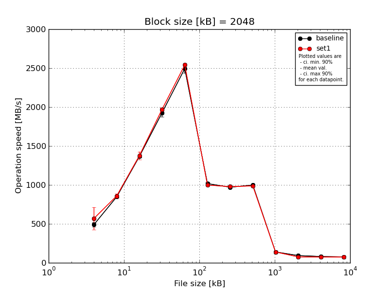
|
Block size [kB] |
File size [kB] |
| 2048 |
4096 |
8192 |
16384 |
32768 |
65536 |
131072 |
262144 |
524288 |
1048576 |
2097152 |
4194304 |
| baseline | 2048 | 520.17 | 856.91 | 1377.17 | 1921.47 | 2517.93 | 1031.54 | 970.45 | 1004.85 | 116.89 | 93.22 | 80.98 | 75.8 |
| 2048 | 456.83 | 843.68 | 1382.62 | 1971.19 | 2551.43 | 1026.84 | 962.87 | 993.25 | 148.58 | 91.94 | 80.69 | 75.74 |
| 2048 | 522.76 | 874.87 | 1362.41 | 1935.66 | 2507.25 | 1034.91 | 984.01 | 1000.12 | 158.42 | 92.79 | 80.7 | 76.17 |
| 2048 | 469.38 | 837.7 | 1337.53 | 1832.78 | 2504.72 | 981.53 | 968.71 | 991.76 | 139.23 | 94.62 | 80.68 | 76.09 |
| 2048 | 490.31 | 822.86 | 1369.36 | 1975.54 | 2387.71 | 1012.37 | 967.07 | 1005.37 | 135.54 | 93.08 | 80.86 | 75.84 |
| mean val. |
491.89 |
847.2 |
1365.82 |
1927.33 |
2493.81 |
1017.44 |
970.62 |
999.07 |
139.73 |
93.13 |
80.78 |
75.93 |
| standard dev. |
29.54 |
19.72 |
17.57 |
57.64 |
62.17 |
21.84 |
7.99 |
6.35 |
15.55 |
0.97 |
0.13 |
0.19 |
| ci. min. 90% |
463.72 |
828.41 |
1349.06 |
1872.37 |
2434.54 |
996.62 |
963.0 |
993.01 |
124.91 |
92.2 |
80.66 |
75.75 |
| ci. max 90% |
520.05 |
866.0 |
1382.57 |
1982.29 |
2553.08 |
1038.26 |
978.24 |
1005.13 |
154.56 |
94.06 |
80.91 |
76.11 |
| geom. mean |
491.18 |
847.02 |
1365.72 |
1926.63 |
2493.18 |
1017.25 |
970.59 |
999.05 |
139.02 |
93.13 |
80.78 |
75.93 |
| median |
490.31 |
843.68 |
1369.36 |
1935.66 |
2507.25 |
1026.84 |
968.71 |
1000.12 |
139.23 |
93.08 |
80.7 |
75.84 |
| first quartile |
469.38 |
837.7 |
1362.41 |
1921.47 |
2504.72 |
1012.37 |
967.07 |
993.25 |
135.54 |
92.79 |
80.69 |
75.8 |
| third quartile |
520.17 |
856.91 |
1377.17 |
1971.19 |
2517.93 |
1031.54 |
970.45 |
1004.85 |
148.58 |
93.22 |
80.86 |
76.09 |
| minimum |
456.83 |
822.86 |
1337.53 |
1832.78 |
2387.71 |
981.53 |
962.87 |
991.76 |
116.89 |
91.94 |
80.68 |
75.74 |
| maximum |
522.76 |
874.87 |
1382.62 |
1975.54 |
2551.43 |
1034.91 |
984.01 |
1005.37 |
158.42 |
94.62 |
80.98 |
76.17 |
| set1 | 2048 | 837.12 | 843.55 | 1379.09 | 2004.52 | 2544.9 | 990.7 | 977.24 | 982.77 | 130.55 | 71.49 | 71.32 | 73.58 |
| 2048 | 485.79 | 815.66 | 1309.76 | 1941.54 | 2542.11 | 1000.34 | 978.68 | 991.82 | 142.89 | 73.33 | 80.17 | 74.22 |
| 2048 | 532.35 | 882.42 | 1335.99 | 1969.69 | 2533.04 | 991.23 | 976.44 | 988.79 | 141.33 | 71.83 | 73.78 | 72.6 |
| 2048 | 514.8 | 884.74 | 1440.12 | 1968.24 | 2561.22 | 1022.77 | 973.32 | 990.14 | 146.33 | 91.34 | 71.35 | 73.23 |
| 2048 | 482.52 | 868.04 | 1413.9 | 1968.99 | 2523.09 | 987.96 | 985.18 | 984.72 | 135.04 | 72.56 | 70.91 | 73.15 |
| mean val. |
570.52 |
858.88 |
1375.77 |
1970.6 |
2540.87 |
998.6 |
978.17 |
987.65 |
139.23 |
76.11 |
73.51 |
73.36 |
| standard dev. |
150.46 |
29.19 |
53.73 |
22.38 |
14.23 |
14.29 |
4.38 |
3.79 |
6.35 |
8.54 |
3.89 |
0.6 |
| ci. min. 90% |
427.07 |
831.05 |
1324.55 |
1949.26 |
2527.31 |
984.97 |
974.0 |
984.04 |
133.17 |
67.97 |
69.79 |
72.79 |
| ci. max 90% |
713.97 |
886.72 |
1426.99 |
1991.94 |
2554.43 |
1012.23 |
982.35 |
991.26 |
145.28 |
84.25 |
77.22 |
73.93 |
| geom. mean |
557.34 |
858.48 |
1374.93 |
1970.49 |
2540.84 |
998.52 |
978.16 |
987.64 |
139.11 |
75.76 |
73.43 |
73.35 |
| median |
514.8 |
868.04 |
1379.09 |
1968.99 |
2542.11 |
991.23 |
977.24 |
988.79 |
141.33 |
72.56 |
71.35 |
73.23 |
| first quartile |
485.79 |
843.55 |
1335.99 |
1968.24 |
2533.04 |
990.7 |
976.44 |
984.72 |
135.04 |
71.83 |
71.32 |
73.15 |
| third quartile |
532.35 |
882.42 |
1413.9 |
1969.69 |
2544.9 |
1000.34 |
978.68 |
990.14 |
142.89 |
73.33 |
73.78 |
73.58 |
| minimum |
482.52 |
815.66 |
1309.76 |
1941.54 |
2523.09 |
987.96 |
973.32 |
982.77 |
130.55 |
71.49 |
70.91 |
72.6 |
| maximum |
837.12 |
884.74 |
1440.12 |
2004.52 |
2561.22 |
1022.77 |
985.18 |
991.82 |
146.33 |
91.34 |
80.17 |
74.22 |
| baseline set1 difference |
15.99 % |
1.38 % |
0.73 % |
2.24 % |
1.89 % |
-1.85 % |
0.78 % |
-1.14 % |
-0.36 % |
-18.28 % |
-9.01 % |
-3.39 % |
| ttest p-value |
0.2847 |
0.4797 |
0.704 |
0.1563 |
0.1375 |
0.1452 |
0.1011 |
0.0086 |
0.9479 |
0.0022 |
0.0031 |
0.0 |
| ttest equality |
SAME |
SAME |
SAME |
SAME |
SAME |
SAME |
SAME |
DIFF |
SAME |
DIFF |
DIFF |
DIFF |
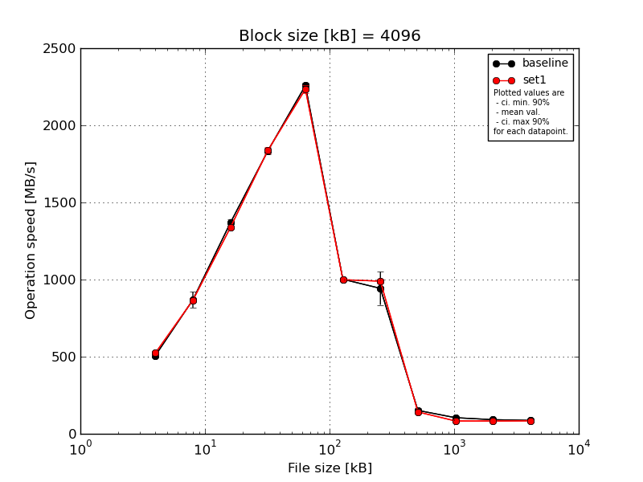
|
Block size [kB] |
File size [kB] |
| 4096 |
8192 |
16384 |
32768 |
65536 |
131072 |
262144 |
524288 |
1048576 |
2097152 |
4194304 |
| baseline | 4096 | 512.75 | 918.9 | 1392.65 | 1857.66 | 2276.62 | 1012.35 | 1002.56 | 122.12 | 103.89 | 91.95 | 86.84 |
| 4096 | 520.44 | 814.41 | 1372.09 | 1825.85 | 2270.47 | 1005.98 | 986.36 | 157.45 | 105.44 | 92.06 | 86.12 |
| 4096 | 503.66 | 905.29 | 1325.25 | 1855.61 | 2258.06 | 1009.47 | 992.89 | 165.08 | 105.22 | 91.33 | 86.87 |
| 4096 | 499.93 | 808.41 | 1378.01 | 1818.82 | 2248.85 | 988.46 | 989.72 | 165.83 | 104.93 | 91.42 | 87.11 |
| 4096 | 500.75 | 897.18 | 1372.09 | 1814.35 | 2235.2 | 993.71 | 742.53 | 148.52 | 103.01 | 91.63 | 86.94 |
| mean val. |
507.51 |
868.84 |
1368.02 |
1834.46 |
2257.84 |
1002.0 |
942.81 |
151.8 |
104.5 |
91.68 |
86.77 |
| standard dev. |
8.84 |
53.04 |
25.34 |
20.67 |
16.63 |
10.38 |
112.12 |
18.01 |
1.02 |
0.32 |
0.38 |
| ci. min. 90% |
499.08 |
818.27 |
1343.86 |
1814.75 |
2241.99 |
992.1 |
835.92 |
134.64 |
103.52 |
91.37 |
86.41 |
| ci. max 90% |
515.93 |
919.41 |
1392.18 |
1854.16 |
2273.69 |
1011.89 |
1049.71 |
168.97 |
105.47 |
91.98 |
87.14 |
| geom. mean |
507.45 |
867.53 |
1367.83 |
1834.36 |
2257.79 |
1001.95 |
936.82 |
150.88 |
104.49 |
91.68 |
86.77 |
| median |
503.66 |
897.18 |
1372.09 |
1825.85 |
2258.06 |
1005.98 |
989.72 |
157.45 |
104.93 |
91.63 |
86.87 |
| first quartile |
500.75 |
814.41 |
1372.09 |
1818.82 |
2248.85 |
993.71 |
986.36 |
148.52 |
103.89 |
91.42 |
86.84 |
| third quartile |
512.75 |
905.29 |
1378.01 |
1855.61 |
2270.47 |
1009.47 |
992.89 |
165.08 |
105.22 |
91.95 |
86.94 |
| minimum |
499.93 |
808.41 |
1325.25 |
1814.35 |
2235.2 |
988.46 |
742.53 |
122.12 |
103.01 |
91.33 |
86.12 |
| maximum |
520.44 |
918.9 |
1392.65 |
1857.66 |
2276.62 |
1012.35 |
1002.56 |
165.83 |
105.44 |
92.06 |
87.11 |
| set1 | 4096 | 523.51 | 863.45 | 1341.62 | 1850.13 | 2243.64 | 1008.84 | 1014.77 | 135.54 | 74.94 | 78.44 | 84.04 |
| 4096 | 525.75 | 880.56 | 1336.33 | 1803.42 | 2211.55 | 997.62 | 980.88 | 141.8 | 82.1 | 92.66 | 84.53 |
| 4096 | 529.04 | 876.9 | 1340.14 | 1858.31 | 2273.86 | 1002.62 | 984.33 | 145.93 | 77.01 | 84.53 | 83.03 |
| 4096 | 539.15 | 865.88 | 1341.62 | 1841.73 | 2227.09 | 1001.89 | 985.43 | 150.47 | 103.11 | 78.67 | 84.12 |
| 4096 | 504.29 | 842.44 | 1325.48 | 1836.84 | 2216.15 | 984.92 | 982.21 | 134.66 | 79.17 | 79.79 | 83.84 |
| mean val. |
524.35 |
865.85 |
1337.04 |
1838.09 |
2234.46 |
999.18 |
989.52 |
141.68 |
83.27 |
82.82 |
83.91 |
| standard dev. |
12.71 |
14.93 |
6.81 |
21.04 |
25.25 |
8.92 |
14.22 |
6.75 |
11.41 |
6.02 |
0.55 |
| ci. min. 90% |
512.23 |
851.61 |
1330.54 |
1818.03 |
2210.38 |
990.67 |
975.96 |
135.24 |
72.39 |
77.07 |
83.39 |
| ci. max 90% |
536.46 |
880.08 |
1343.53 |
1858.14 |
2258.53 |
1007.69 |
1003.09 |
148.12 |
94.14 |
88.56 |
84.44 |
| geom. mean |
524.22 |
865.74 |
1337.02 |
1837.99 |
2234.35 |
999.15 |
989.44 |
141.55 |
82.7 |
82.65 |
83.91 |
| median |
525.75 |
865.88 |
1340.14 |
1841.73 |
2227.09 |
1001.89 |
984.33 |
141.8 |
79.17 |
79.79 |
84.04 |
| first quartile |
523.51 |
863.45 |
1336.33 |
1836.84 |
2216.15 |
997.62 |
982.21 |
135.54 |
77.01 |
78.67 |
83.84 |
| third quartile |
529.04 |
876.9 |
1341.62 |
1850.13 |
2243.64 |
1002.62 |
985.43 |
145.93 |
82.1 |
84.53 |
84.12 |
| minimum |
504.29 |
842.44 |
1325.48 |
1803.42 |
2211.55 |
984.92 |
980.88 |
134.66 |
74.94 |
78.44 |
83.03 |
| maximum |
539.15 |
880.56 |
1341.62 |
1858.31 |
2273.86 |
1008.84 |
1014.77 |
150.47 |
103.11 |
92.66 |
84.53 |
| baseline set1 difference |
3.32 % |
-0.34 % |
-2.26 % |
0.2 % |
-1.04 % |
-0.28 % |
4.95 % |
-6.67 % |
-20.32 % |
-9.66 % |
-3.3 % |
| ttest p-value |
0.041 |
0.9064 |
0.0297 |
0.7901 |
0.1221 |
0.6578 |
0.3824 |
0.273 |
0.0032 |
0.0111 |
0.0 |
| ttest equality |
DIFF |
SAME |
DIFF |
SAME |
SAME |
SAME |
SAME |
SAME |
DIFF |
DIFF |
DIFF |
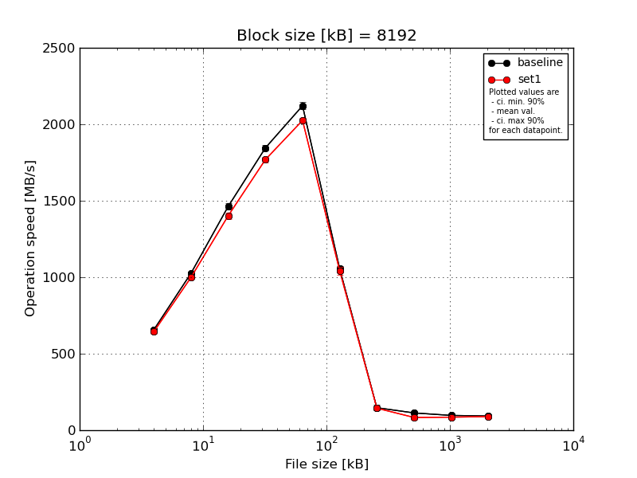
|
Block size [kB] |
File size [kB] |
| 8192 |
16384 |
32768 |
65536 |
131072 |
262144 |
524288 |
1048576 |
2097152 |
4194304 |
| baseline | 8192 | 671.25 | 1025.05 | 1478.94 | 1869.64 | 2162.46 | 1059.78 | 115.55 | 107.87 | 96.53 | 93.43 |
| 8192 | 658.81 | 1020.93 | 1485.81 | 1858.3 | 2115.84 | 1033.49 | 160.02 | 115.0 | 94.86 | 93.21 |
| 8192 | 645.32 | 1019.55 | 1445.47 | 1837.44 | 2111.31 | 1054.29 | 154.82 | 113.81 | 96.42 | 92.74 |
| 8192 | 654.39 | 1030.59 | 1474.24 | 1823.72 | 2114.2 | 1086.99 | 162.26 | 113.33 | 98.11 | 92.63 |
| 8192 | 657.89 | 1038.68 | 1432.99 | 1838.55 | 2100.88 | 1044.81 | 142.64 | 114.97 | 97.16 | 92.71 |
| mean val. |
657.53 |
1026.96 |
1463.49 |
1845.53 |
2120.94 |
1055.87 |
147.06 |
113.0 |
96.62 |
92.95 |
| standard dev. |
9.34 |
7.83 |
22.95 |
18.26 |
23.93 |
20.06 |
19.18 |
2.96 |
1.19 |
0.36 |
| ci. min. 90% |
648.63 |
1019.49 |
1441.61 |
1828.12 |
2098.12 |
1036.75 |
128.77 |
110.18 |
95.48 |
92.61 |
| ci. max 90% |
666.44 |
1034.43 |
1485.38 |
1862.94 |
2143.75 |
1075.0 |
165.34 |
115.81 |
97.75 |
93.28 |
| geom. mean |
657.48 |
1026.94 |
1463.35 |
1845.46 |
2120.83 |
1055.72 |
145.96 |
112.96 |
96.61 |
92.94 |
| median |
657.89 |
1025.05 |
1474.24 |
1838.55 |
2114.2 |
1054.29 |
154.82 |
113.81 |
96.53 |
92.74 |
| first quartile |
654.39 |
1020.93 |
1445.47 |
1837.44 |
2111.31 |
1044.81 |
142.64 |
113.33 |
96.42 |
92.71 |
| third quartile |
658.81 |
1030.59 |
1478.94 |
1858.3 |
2115.84 |
1059.78 |
160.02 |
114.97 |
97.16 |
93.21 |
| minimum |
645.32 |
1019.55 |
1432.99 |
1823.72 |
2100.88 |
1033.49 |
115.55 |
107.87 |
94.86 |
92.63 |
| maximum |
671.25 |
1038.68 |
1485.81 |
1869.64 |
2162.46 |
1086.99 |
162.26 |
115.0 |
98.11 |
93.43 |
| set1 | 8192 | 663.57 | 997.75 | 1421.27 | 1746.39 | 1999.22 | 1024.18 | 138.29 | 74.2 | 80.08 | 89.01 |
| 8192 | 631.91 | 998.5 | 1364.72 | 1779.76 | 2018.0 | 1021.58 | 154.67 | 80.22 | 98.31 | 89.67 |
| 8192 | 651.1 | 993.97 | 1409.76 | 1797.14 | 2048.2 | 1026.07 | 142.78 | 75.63 | 86.67 | 87.41 |
| 8192 | 633.56 | 1001.63 | 1398.66 | 1763.82 | 2029.17 | 1063.38 | 148.01 | 109.24 | 80.25 | 88.69 |
| 8192 | 644.08 | 1007.57 | 1417.25 | 1758.1 | 2031.53 | 1076.25 | 135.56 | 77.5 | 80.7 | 88.77 |
| mean val. |
644.84 |
999.88 |
1402.33 |
1769.04 |
2025.22 |
1042.29 |
143.87 |
83.36 |
85.2 |
88.71 |
| standard dev. |
13.08 |
5.09 |
22.72 |
19.78 |
18.11 |
25.58 |
7.67 |
14.64 |
7.82 |
0.82 |
| ci. min. 90% |
632.37 |
995.03 |
1380.67 |
1750.19 |
2007.96 |
1017.9 |
136.56 |
69.4 |
77.74 |
87.92 |
| ci. max 90% |
657.32 |
1004.73 |
1423.99 |
1787.9 |
2042.48 |
1066.68 |
151.18 |
97.32 |
92.66 |
89.49 |
| geom. mean |
644.74 |
999.87 |
1402.19 |
1768.95 |
2025.16 |
1042.04 |
143.7 |
82.45 |
84.93 |
88.71 |
| median |
644.08 |
998.5 |
1409.76 |
1763.82 |
2029.17 |
1026.07 |
142.78 |
77.5 |
80.7 |
88.77 |
| first quartile |
633.56 |
997.75 |
1398.66 |
1758.1 |
2018.0 |
1024.18 |
138.29 |
75.63 |
80.25 |
88.69 |
| third quartile |
651.1 |
1001.63 |
1417.25 |
1779.76 |
2031.53 |
1063.38 |
148.01 |
80.22 |
86.67 |
89.01 |
| minimum |
631.91 |
993.97 |
1364.72 |
1746.39 |
1999.22 |
1021.58 |
135.56 |
74.2 |
80.08 |
87.41 |
| maximum |
663.57 |
1007.57 |
1421.27 |
1797.14 |
2048.2 |
1076.25 |
154.67 |
109.24 |
98.31 |
89.67 |
| baseline set1 difference |
-1.93 % |
-2.64 % |
-4.18 % |
-4.14 % |
-4.51 % |
-1.29 % |
-2.17 % |
-26.23 % |
-11.81 % |
-4.56 % |
| ttest p-value |
0.1156 |
0.0002 |
0.0029 |
0.0002 |
0.0001 |
0.3776 |
0.7387 |
0.0022 |
0.0121 |
0.0 |
| ttest equality |
SAME |
DIFF |
DIFF |
DIFF |
DIFF |
SAME |
SAME |
DIFF |
DIFF |
DIFF |

|
Block size [kB] |
File size [kB] |
| 16384 |
32768 |
65536 |
131072 |
262144 |
524288 |
1048576 |
2097152 |
4194304 |
| baseline | 16384 | 774.89 | 1161.82 | 1587.78 | 1942.87 | 2211.72 | 118.17 | 116.72 | 102.69 | 96.34 |
| 16384 | 762.59 | 1155.74 | 1584.82 | 1913.25 | 2178.06 | 152.25 | 117.4 | 103.3 | 96.89 |
| 16384 | 764.71 | 1148.06 | 1580.33 | 1908.82 | 2481.48 | 162.82 | 112.43 | 102.4 | 96.57 |
| 16384 | 747.94 | 1139.53 | 1567.32 | 1905.13 | 2513.01 | 159.36 | 112.42 | 101.34 | 96.19 |
| 16384 | 746.37 | 1148.64 | 1563.61 | 1924.29 | 2176.24 | 148.12 | 118.87 | 100.47 | 96.46 |
| mean val. |
759.3 |
1150.76 |
1576.77 |
1918.87 |
2312.1 |
148.15 |
115.57 |
102.04 |
96.49 |
| standard dev. |
12.04 |
8.44 |
10.74 |
15.22 |
169.97 |
17.72 |
2.97 |
1.13 |
0.26 |
| ci. min. 90% |
747.83 |
1142.71 |
1566.53 |
1904.36 |
2150.05 |
131.25 |
112.73 |
100.96 |
96.24 |
| ci. max 90% |
770.78 |
1158.81 |
1587.01 |
1933.38 |
2474.15 |
165.04 |
118.4 |
103.12 |
96.74 |
| geom. mean |
759.23 |
1150.73 |
1576.74 |
1918.82 |
2307.18 |
147.22 |
115.54 |
102.03 |
96.49 |
| median |
762.59 |
1148.64 |
1580.33 |
1913.25 |
2211.72 |
152.25 |
116.72 |
102.4 |
96.46 |
| first quartile |
747.94 |
1148.06 |
1567.32 |
1908.82 |
2178.06 |
148.12 |
112.43 |
101.34 |
96.34 |
| third quartile |
764.71 |
1155.74 |
1584.82 |
1924.29 |
2481.48 |
159.36 |
117.4 |
102.69 |
96.57 |
| minimum |
746.37 |
1139.53 |
1563.61 |
1905.13 |
2176.24 |
118.17 |
112.42 |
100.47 |
96.19 |
| maximum |
774.89 |
1161.82 |
1587.78 |
1942.87 |
2513.01 |
162.82 |
118.87 |
103.3 |
96.89 |
| set1 | 16384 | 743.22 | 1115.29 | 1513.4 | 1832.16 | 2262.52 | 135.55 | 75.28 | 82.94 | 91.57 |
| 16384 | 737.49 | 1124.93 | 1519.32 | 1834.78 | 2284.45 | 155.13 | 84.26 | 101.18 | 92.81 |
| 16384 | 758.58 | 1117.98 | 1540.98 | 1891.08 | 2379.63 | 130.59 | 75.61 | 88.31 | 89.34 |
| 16384 | 745.75 | 1109.07 | 1516.7 | 1842.47 | 2076.05 | 133.13 | 112.5 | 82.62 | 91.59 |
| 16384 | 747.7 | 1118.05 | 1505.98 | 1854.7 | 2275.79 | 132.08 | 78.13 | 81.6 | 91.45 |
| mean val. |
746.55 |
1117.07 |
1519.28 |
1851.04 |
2255.69 |
137.3 |
85.15 |
87.33 |
91.35 |
| standard dev. |
7.74 |
5.72 |
13.12 |
24.04 |
110.58 |
10.13 |
15.7 |
8.17 |
1.25 |
| ci. min. 90% |
739.16 |
1111.62 |
1506.76 |
1828.12 |
2150.27 |
127.63 |
70.18 |
79.54 |
90.16 |
| ci. max 90% |
753.93 |
1122.52 |
1531.79 |
1873.96 |
2361.11 |
146.96 |
100.13 |
95.12 |
92.55 |
| geom. mean |
746.52 |
1117.05 |
1519.23 |
1850.91 |
2253.47 |
137.01 |
84.13 |
87.04 |
91.35 |
| median |
745.75 |
1117.98 |
1516.7 |
1842.47 |
2275.79 |
133.13 |
78.13 |
82.94 |
91.57 |
| first quartile |
743.22 |
1115.29 |
1513.4 |
1834.78 |
2262.52 |
132.08 |
75.61 |
82.62 |
91.45 |
| third quartile |
747.7 |
1118.05 |
1519.32 |
1854.7 |
2284.45 |
135.55 |
84.26 |
88.31 |
91.59 |
| minimum |
737.49 |
1109.07 |
1505.98 |
1832.16 |
2076.05 |
130.59 |
75.28 |
81.6 |
89.34 |
| maximum |
758.58 |
1124.93 |
1540.98 |
1891.08 |
2379.63 |
155.13 |
112.5 |
101.18 |
92.81 |
| baseline set1 difference |
-1.68 % |
-2.93 % |
-3.65 % |
-3.54 % |
-2.44 % |
-7.32 % |
-26.32 % |
-14.42 % |
-5.32 % |
| ttest p-value |
0.0815 |
0.0001 |
0.0001 |
0.0007 |
0.5512 |
0.2688 |
0.0028 |
0.004 |
0.0 |
| ttest equality |
DIFF |
DIFF |
DIFF |
DIFF |
SAME |
SAME |
DIFF |
DIFF |
DIFF |